1. Introduction
Les technologies mobiles nous entourent de plus en plus, avec en premier les téléphones mobiles, mais aussi les outils de positionnement, les agendas, les organiseurs ... Le monde de l'entreprise a depuis longtemps misé sur ces technologies, mettant en œuvre des applications mobiles issues de besoins précis et significatifs. Depuis l'arrivée d'Internet et son succès, la nécessité de créer une continuité d’accès depuis des terminaux mobiles n’a fait que s’accroître, du fait de l'intérêt à disposer de tous types d'informations depuis n'importe où, voire d'accéder à son propre système d'information de façon sécurisée. Cela ouvre de nouveaux horizons, notamment sur le plan des types d'applications. Cependant, l'avantage de la mobilité en informatique engendre des inconvénients, dont les palliatifs ne sont pas du même ordre que ceux existants dans les systèmes informatiques actuels.
La diversité des terminaux est l’une de ces problématiques. Elle suppose des difficultés dans le déploiement et le maintien d’une même application. Les réseaux mobiles qui permettent l’acheminement des données n’ont pas la même fiabilité que les réseaux filaires, ce que les applications doivent prendre en compte.
Face à ces nouvelles problématiques il est nécessaire de mener une réflexion dont l’objectif est de proposer des architectures nouvelles, mieux adaptées aux environnements mobiles. Il s’agit d’un vaste domaine et nous allons commencer par nous intéresser au monde de l’entreprise, et plus particulièrement au secteur de la santé, dont les besoins sont plus que présents et dont les modes de fonctionnement demandent beaucoup de rigueur. Une problématique vient alors s’ajouter : celle de l’existant d’entreprise. En effet quel que soit le domaine choisi, les besoins mobiles sont toujours en relation avec un environnement existant, qui n’est pas toujours conçu avec les dernières technologies. C’est particulièrement le cas dans le secteur de la santé.
Pour aborder ce sujet nous
commencerons par faire le tour des technologies mobiles en général : des
supports aux terminaux en passant par les protocoles et les applications déjà
existantes. Ensuite après une présentation du contexte d’entreprise, nous
présenterons le cas d’étude : le projet HealthKey dont le thème porte sur
le dossier personnel médical embarqué. Par ailleurs nous aborderons l’étude de
solutions techniques, comme la synchronisation et les standards du Web,
susceptibles d’êtres des réponses aux problématiques mises en jeu. Ce qui nous
amènera à proposer une architecture de réalisation et de mise en œuvre,
permettant ainsi d’évaluer une manière d’appréhender les applications mobiles
d’entreprise.
2. Contexte général
2.1. Les enjeux du mobile dans l’entreprise
Une entreprise s’intéresse aux technologies mobiles pour que l’accès à son système d’information ne soit pas dépendant d’un lieu. C’est le cas dans le domaine de la logistique où le suivi d’une livraison est plus précis et rapide car l’employé peut informer de l’état du transport à tout moment. Un autre exemple concerne les vendeurs itinérants qui peuvent désormais prendre commande chez un client et en informer l’entreprise instantanément.
Les technologies mobiles entraînent, pour l’entreprise, une nouvelle manière de traiter et d’exploiter de l’information, avec des avantages mais aussi des inconvénients. Les architectures des applications existantes doivent évoluer, de nouveaux terminaux et périphériques s’ajoutent au parc informatique, les utilisateurs changent leurs habitudes et doivent y trouver une amélioration de leur quotidien. Tout cela doit être pris en compte dans la réflexion générale liée à la mise en œuvre d’applications mobiles.
2.2. Quelle architecture ?
2.2.1.
Matérielle
Tout dépend des utilisateurs des applications mobiles. Si ceux-ci doivent accéder à l’information depuis l’extérieur de l’entreprise il faut passer par un opérateur. Ce qui sera presque toujours le cas, des applications mobiles en intranet ayant moins d’intérêt.
Il est vrai que jusqu’ici les applications classiques Web ou client/serveur, passaient par un serveur placé chez un hébergeur. L’architecture matérielle reste donc sensiblement la même. Mais ce qui change c’est le coût du fournisseur d’accès au réseau, les réseaux mobiles étant plus chers que les réseaux filaires.
2.2.2. Logicielle
Les terminaux changent (téléphone,
PDA, ordinateur portable …), leur nombre augmente (2 à 3 par employé), les
interfaces évoluent du fait des différences d’écrans et claviers. Ainsi
l’architecture logicielle se doit d’être plus générique et de clairement
séparer les données de l’entreprise, le fonctionnel des applications, les IHM.
2.3. Problématiques
2.3.1. Fluctuation réseaux
Les réseaux mobiles (sans fils ou « wireless ») sont pratiques, les fils disparaissent et l’on reste connecté au réseau à distance. Mais cela ne va pas sans inconvénients :
- les coûts de communications sont élevés et en général évalués au volume des données échangées,
- il n’y a pas de garantie de service, du fait que certaines régions ne sont pas couvertes par des opérateurs mobiles,
- les canaux de communications ne sont pas fiables, car aléatoires et imprévisibles (fonction du temps, de la vitesse de déplacement …).
L’utilisateur d’un terminal mobile doit donc être considéré comme « ponctuellement » connecté, à l’inverse des utilisateurs de PC en LAN ou WAN qui sont constamment connectés.
Comment faire alors pour que les données des serveurs
d’entreprises restent accessibles et que le travail de l’utilisateur soit pris
en compte, sachant qu’il est nécessaire que toutes les applications conservent
une cohésion au niveau de leurs données ?
2.3.2. Hétérogénéité des terminaux et de leurs plates-formes
Le terminal mobile dans l’entreprise va de l’ordinateur portable au téléphone cellulaire, en passant par les PDA et autres ordinateurs de poches. Or les écrans ne sont pas de même taille et les périphériques de saisie sont différents (clavier classique 101 touches, clavier 16 touches, stylet …). De plus les systèmes d’exploitation sont différents suivant les constructeurs, et pour ce qui est des PDA et des téléphones, ces systèmes ne peuvent évoluer à la différence des ordinateurs de poche et des portables. Autant d’éléments qui sont un vrai casse-tête pour une entreprise qui pour l’instant se doit de choisir un terminal unique pour toute l’entreprise si elle veut déployer et exploiter facilement son parc mobile avec des applications spécifiques.
Comment faire pour arriver à ne déployer qu’une seule
application, indépendamment du terminal et de sa plate-forme ?
2.3.3. Gestion de l'existant d'entreprise
Les applications existantes de l’entreprise ne sont, pour la plupart, pas adaptées à la mobilité. Cela n’implique cependant pas qu’il faille les réécrire.
Comment donc arriver à les intégrer dans une architecture
d’entreprise comportant des éléments mobiles ?
C’est à ces trois problématiques que nous allons tenter de répondre ici, en présentant les travaux actuels, tant au niveau de la recherche qu’à celui des technologies. Nous porterons l’accent plus particulièrement sur les techniques de synchronisation qui, nous le verrons, apportent des réponses très satisfaisantes, et sur les normes en vigueur, comme XML, ou encore les spécifications mise en œuvre par de grandes entreprises ou organisations (Sun, Microsoft, 3GPP, …)
3. Contexte technique
3.1. Les protocoles
3.1.1. WAP et SMS : premiers pas
Certaines entreprises ont déjà mis en œuvre des solutions mobiles en utilisant des terminaux de téléphonie mobile, notamment avec le protocole WAP (Wireless Access Protocol). Celui-ci permet l’accès à l’Internet depuis un téléphone mobile. Constitué de plusieurs couches (WTP, WSP, WDP), il peut être considéré comme une optimisation et un encodage du protocole HTTP pour s’adapter aux réseaux mobiles actuels comme GSM[1]. Le succès de ce protocole est mitigé : du fait de réseaux mobiles dont la bande passante est trop faible, il n’a pas répondu aux attentes du grand public. Les entreprises l’ont utilisé, par exemple pour des applications de messageries ou d’agenda. Le WAP permettant de saisir de l’information, il apporte la possibilité d’effectuer des actions à partir de son mobile, l’exemple le plus répandu étant les applications boursières.
Cependant ces solutions sont souvent liées à la messagerie instantanée et à la notification, et pour cela le SMS (Short Message Service), plus simple dans son concept mais aussi dans sa mise en œuvre, a eu plus de succès tant du côté des entreprises, que du grand public. Le principe consistant à échanger des messages textes, il devient aisé d’informer à distance de façon simple, un message texte pouvant être compris par une machine ou un être humain. Cette technologie à évolué depuis vers MMS (Multimédia Message Service). Mais le principe restant le même et c’est désormais des informations multimédia (texte, image, vidéo, son) qui sont échangées.
Les terminaux actuels ne permettant pas des fonctionnalités pointues ni d’interfaces utilisateurs élaborées et les réseaux GSM en Europe ne fournissant qu’un débit de 9.6Kbits/s, le GPRS[2] a fait son apparition mais à des coûts encore élevés. Autant de raisons qui freine l’élaboration d’applications mobiles intéressantes.
D’autre part, l’accès à l’information doit être assuré : le réseau doit avoir une forte qualité de service et doit être sécurisé. Or à l’heure actuelle, le mode connecté (c'est-à-dire le fait pour une application de pouvoir accéder constamment au réseau) reste un problème pour les réseaux mobiles du fait de la répartition des bornes d’émission / réception. Coté sécurité, les problèmes sont similaires à ceux rencontrés jusqu’ici avec les réseaux filaires.
Il faut donc apporter aux entreprises des solutions qui leur permette d’avoir des terminaux adaptés et des applications dont les données ne seront pas dépendantes du réseau.
3.1.2. VoIP : une approche complémentaire
Depuis 1995, des applications permettent de téléphoner via Internet, à un coût bien moindre. La technologie liée à la transformation de la voie en données numériques à été nommée VoIP pour Voie sur IP.
Le véritable enjeu de la voie sur IP dépasse cependant le cadre de la téléphonie bon marché sur l’Internet. En effet, la possibilité de combiner voix, données et vidéo sur le même réseau de transport permet d’envisager de nouvelles applications. Comme par exemple la vidéo conférence sur Internet. D’autres applications sont en gestation, telle la messagerie unifiée pour envoyer indifféremment des messages voix sur IP, électroniques ou télécopie via l’Internet
La voix sur IP permet d’enrichir le travail coopératif. Celui-ci, mêlant la voix aux données sur IP affranchit les utilisateurs des contraintes liées à l’éloignement. Après le groupware de données, voici le temps du groupware multimédia. Avec ces applications coopératives, les utilisateurs peuvent dialoguer avec un correspondant, tout en consultant simultanément les mêmes données sur leur ordinateur, grâce aux infrastructures Internet. Le développement actuel des technologies IP devrait faciliter le travail de coopération multimédia.
3.2. Les réseaux
Quel que soit le protocole utilisé, c’est le réseau mobile qui est important. Il existe deux types de réseaux : les petits réseaux locaux liés à des normes comme Bluetooth ou 802.11b et les réseaux nationaux et internationaux liés à la norme GSM en Europe, CDMA / TDMA aux Etats-Unis, ou encore I-Mode au Japon et récemment en France.
Les réseaux locaux apportent plus de souplesse à la mise en place d’un intranet dans une entreprise, en supprimant l’ensemble du câblage. La norme 802.11b se positionne plus dans ce domaine, contrairement à Bluetooth qui s’intéresse davantage à la communication entre machines et périphériques. Cependant ces réseaux n’imposent pas de créer de nouvelles applications, la notion de mobilité étant uniquement dans le cadre des locaux de l’entreprise.
Les réseaux nationaux et internationaux, quant à eux, sont et seront un moteur dans l’élaboration et l’évolution de nouvelles applications. A l’heure actuelle le réseau GSM en Europe offre peu de possibilités du fait de sa faible capacité en bande passante. C’est le cas aussi pour les réseaux américains de la norme CDMA et TDMA. Pour améliorer leur capacité, des évolutions ont été mises en œuvre par des organismes de spécifications techniques et normalisées par des organismes de normalisations, tous reliés par une instance mondiale désignée sous le nom de IMT-2000 ou UIT (Union Internationale des Télécommunications).
L’évolution de ces réseaux se fait en plusieurs phases, les réseaux mobiles actuels étant désignés comme réseaux de 2ème génération, et les futurs réseaux mobiles comme réseaux de 3ème génération. Cependant pour maîtriser le passage de l’un à l’autre, des réseaux « intermédiaires » ont été mis en place et désignés comme 2.5ème génération.
Le GPRS (General Packet Radio Service) est un réseau de 2.5ème génération. C’est une extension du réseau GSM qui a pour but d’améliorer la capacité de la bande passante en la multipliant par 10 et de donner un accès réseau permanent à l’Internet. Cette technologie peut aussi s’adapter aux réseaux américains de norme TDMA. Pour les réseaux de norme CDMA, une technologie concurrente a été choisie, nommée 1XRTT. Une alternative au GPRS, plus complexe dans sa mise en œuvre mais plus performante, désignée sous le nom EDGE (Enhanced Data rates for GSM Evolution) existe aussi. Nous n’entrerons pas ici dans le détail de ces technologies.
Les Japonais, déjà en avance par rapport au reste du monde, ont un réseau basé sur une technologie propriétaire à la société NTTDocomo et nommée I-Mode. Celle-ci est déjà au niveau de la 2.5ème génération.
L’initiative de l’UIT a permis de faire converger toutes ces technologies vers une seule norme pour la 3ème génération de réseau mobile : l’UMTS (Universal Mobile Telecomunication System). Cependant les Américains ont choisi de continuer l’évolution de leur technologie CDMA, 1XRTT vers une technologie de 3ème génération nommée 3XRTT, ou encore cdma2000.
L’UMTS apporte une bande passante haut débit et permet de transporter de l’information multimédia. Il faut toutefois relativiser, car la technologie est dépendante de la distance. De plus sa mise en place est excessivement coûteuse car si pour le GPRS l’évolution n’est que logicielle, pour l’UMTS l’évolution est aussi matérielle.
Bien que le GPRS soit déjà mis en place, l’UMTS mettra encore du temps à voir le jour et seuls les Japonais ont commencé à faire évoluer leur technologie vers la norme internationale. Le coût des communications basées sur le taux de téléchargement pour les accès Internet est un frein à la mise en œuvre de nouvelles applications basées sur l’apport de ces nouveaux réseaux. De plus, le marché des nouvelles technologies ne vit pas ses meilleurs jours et les échecs précédents sur les projets liés à l’Internet n’aident pas les entreprises à s’investir dans les technologies mobiles.
3.3. Les plates-formes
Face à la multiplicité des terminaux, il est impératif d’uniformiser au maximum le support d’exécution des applications, pour pouvoir diffuser une application sur une grande partie de ces terminaux, sans avoir à l’adapter, voire à la re-développer au cas par cas. Pour cela, il faut que les constructeurs intègrent des environnements permettant de faire fonctionner des applications sur au moins l’ensemble de leur terminaux, voire sur des terminaux concurrents. Face à cette problématique, des sociétés comme Nokia, ont choisi d’intégrer la plate-forme Java : J2ME. Le WAP est une première réponse aussi, mais n’apporte que peu de possibilités. Enfin des spécifications plus générales sont aussi en cours d’élaboration.
3.3.1. J2ME : Java 2 Micro Edition
J2ME est l’ensemble des spécifications et API définies par SUN, pour créer des applications sur des plates-formes mobiles et/ou de petites tailles. Si le protocole WAP permet d’afficher des informations à l’écran avec un navigateur interprétant le langage WML (Wireless Markup Language, langage du WAP, simplification de HTML), l’environnement J2ME permet de développer le navigateur. Ces technologies ne sont donc pas concurrentes mais complémentaires.
Cette plate-forme est conçue en deux « couches », profils et configurations, qui ne sont en fait que les API Java de bases simplifiées. Chaque profil repose sur une configuration qui elle-même repose sur une machine virtuelle spécifique. Aujourd’hui SUN a spécifié deux configurations basées chacune sur une machine virtuelle bien spécifique aux terminaux visés :
- CLDC (Connected Limited Device Configuration) basée sur la KVM, pour les terminaux mobiles de petites tailles (téléphones, PDA), avec peu de mémoire et une faible capacité en CPU
- CDC (Connected Device Configuration) basée sur la CVM, pour des terminaux mobiles moyens (pager, ordinateur de poche), avec une capacité de CPU moyenne.
Ensuite viennent les profils :
- MIDP (Mobile Information Device Profile) assure une extension à la CLDC, en ajoutant des éléments graphiques.
- Foundation Profile assure une extension à la CDC, en ajoutant des éléments aux API présentes dans la configuration ainsi que d’autres API de base. Ce profil sert de base à d’autres profils plus spécifiques aux terminaux visés, comme Personal Profile, Game Profile, encore en cours de spécification.
Des entreprises comme IBM, ont déjà implémenté les spécifications CLDC/MIDP, en basant la configuration sur leur propre machine virtuelle nommée J9, compatible sur Palm Pilot, Symbian OS, ou encore Windows CE.
3.3.2. Windows Mobile
La société Microsoft a choisi d’éditer son propre environnement, basé sur sa récente technologie .NET. Il est à noter qu’à l’heure actuelle, les performances et l’ergonomie de ces outils sont très avancés. Cependant leur solution reste propriétaire, en tout cas pour la partie de développement d’application, du coté des échanges, leur plate-forme mise sur les services Web.
Celle-ci se décompose en trois sous produits, tous issus de l’environnement précédent : Windows CE (système d’exploitation pour l’embarqué).
- Pocket PC : environnement dédié au PDA
- Pocket PC Phone Edition : environnement dédié aux téléphones mobiles de moyenne taille.
- Smartphone : environnement dédié aux téléphones mobiles de petite taille
Dans chaque cas, on retrouve une ergonomie proche du système
Windows XP, mais adapté à un écran plus petit, avec les outils de bureautique
Windows Office, là aussi adaptés.
3.3.3. MExE : Mobile Executing Environment
En 1998, naît
un projet de partenariat pour la 3ème génération des
télécommunications : le 3GPP (Third Generation Partnership Project), regroupant
des organismes nationaux de normalisation. Ce partenariat est très actif dans
l’élaboration de normes autour des nouvelles technologies de
télécommunications. Ils sont à l’origine de MExE, une spécification visant à
harmoniser les environnements d’exécutions (systèmes d’exploitation, machine
virtuelle, protocole) d’applications mobiles. Cette spécification préconise
l’utilisation de J2ME, WAP ou Personal Java (l’ancienne plate-forme Java pour
l’embarqué) et tend à mettre en œuvre le principe du VHE (Virtual Home
Environment) dont le but est de rendre transparent l’accès au réseau quelle que
soit la compagnie (en bref si vous êtes dans un pays étranger vous pourrez
utiliser votre portable comme dans votre propre pays, le système VHE se
chargera de vous reconnaître). Cette spécification, encore en cours
d’élaboration, sera d’une importance capitale pour faciliter l’utilisation des
terminaux mobiles, quel que soit le terminal et où que vous soyez.
3.4. Les supports
Il existe plusieurs grands types de support liés à l’informatique mobile. Tout d’abord il y a les téléphones mobiles, aujourd’hui très répandus.Viennent ensuite les PDA (Personal Digital Assistant), outils orientés organisation avec des applications de type PIM (Personal Information Manager). A l’heure actuelle ces deux supports convergent pour offrir les mêmes fonctionnalités mais sur un seul appareil. Puis viennent les ordinateurs portables, qui bien que déjà existants et pas implicitement liés à la mobilité, sont devenus grâce aux réseaux sans fils des supports mobiles à part entière. A noter par ailleurs l’arrivée de la tablette, l’ordinateur portable, sans clavier, ni souris, mais avec stylet et qui se manipule comme un cahier. Il existe d’autres supports comme les clés USB, qui sont des disques de stockage de données de la taille d’un porte clé et qui grâce à l’USB peuvent se connecter à différentes machines; nous verrons que cet outil peut lui aussi embarquer des applications. Enfin nous passerons sur les terminaux mobiles orientés multimédia (appareils photos, baladeurs, …) qui font aussi partie des supports mobiles mais qui ne nous intéresseront pas ici. A noter cependant que les supports comme les téléphones mobiles ou les PDA intègrent désormais des interfaces multimédia, et permettant de prendre des photos, d’écouter le la musique, de filmer…
Le schéma suivant présente les différents supports et leur évolution dans le temps :

Figure 1 : Supports de l'informatique mobile
3.5. Les applications
En terme d’applications mobiles, il existe déjà un ensemble d’applications bien distinctes, lesquelles se différencient selon qu’elles utilisent la synchronisation pour se mettre à jour ou qu’elles ne font que diffuser un contenu.
3.5.1. Synchronisation
Sur PDA, un grand nombre d’applications permettent de gérer ses informations personnelles (PIM : Personal Information Manager), souvent synchronisables avec un PC et nécessitant une base de données locale.
Pour ce qui est du déploiement, on associe alors à ce type d’applications une architecture basée sur des serveurs de synchronisation (Figure 2). Ces serveurs proposent de synchroniser des informations entre les bases de données centralisées et les bases mobiles des utilisateurs. Les technologies de synchronisation permettent à l’utilisateur de travailler de façon locale, à l’inverse des solutions de diffusion de contenu, qui requièrent d’être constamment connectées.
Bases miroirs utilisateurs Base de données de synchronisation

Figure 2 : Architecture d’un serveur de synchronisation
3.5.2. Diffusion de contenus
Sur téléphone mobile, en Europe le WAP (Wireless Application Protocol) et au Japon l’I-Mode permettent d’accéder à l’Internet via une passerelle et de diffuser de l’information issue de sites Web, adaptés pour ces protocoles, et développés avec un langage HTML simplifiés nommé WML (Wireless Markup Language) pour WAP et cHTML (compact HTML) pour I-Mode. Ces types d’applications sont basés sur la diffusion de contenus et leur succès dépend de la qualité d’affichage des informations, ainsi que de la quantité d’informations téléchargeable dans un temps donné (bande-passante). L’I-Mode a ainsi connu un meilleur succès au Japon que le WAP en Europe.
Pour ce qui est du déploiement, on associe ce type d’application à une architecture basée sur des serveurs de diffusion de contenu (Figure 3). Ces serveurs sont capables de produire des contenus adaptés à l’hétérogénéité des terminaux, en tenant compte de caractéristiques telles que la taille de l’écran ou la version du logiciel de présentation de contenu...
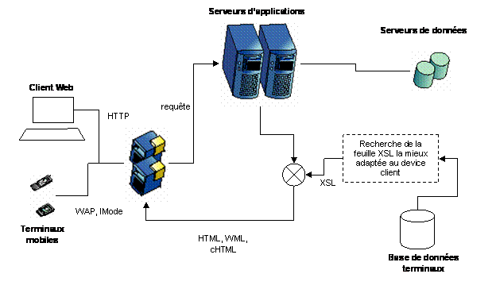
Figure 3 :
Architecture d’un serveur de diffusion de contenu
Ces serveurs proposent généralement une architecture basée sur XML et XSL où XML permet de stocker le contenu et XSL de le formater. Différentes feuilles de styles étant alors proposées pour gérer la production pour tel ou tel type de terminal.
La production de contenu s’effectuant à la volée, cette architecture permet de garantir un haut niveau d’évolutivité face à la recrudescence d’émission de nouveaux types de terminaux, et les incessantes évolutions des formats de diffusion.
Ces produits sont plutôt matures et les éléments différentiateurs sont liés à l’ouverture de la plate-forme de diffusion de contenu aux données d’entreprise, et aux terminaux supportés, qui sont autant de garantie d’évolutivité de la solution retenue.
Ensuite, toujours dans le domaine de la téléphonie mobile, les applications les mieux adaptées sont caractérisées sous forme de services. C’est l’un des atouts de l’I-Mode (qui inclut ce type d’application contrairement au WAP qui ne fait que de la diffusion de contenu). Ce principe de diffusion d’applications est une offre de l’opérateur mobile, et ne peut être mis en place que par lui ou en accord avec lui. L’ensemble des services I-Mode est ainsi un partenariat entre l’entreprise qui détient l’information (e.g. : une banque, une compagnie de réservation) et NTT DoCoMo, l’opérateur japonais propriétaire d’I-Mode. En France les opérateurs utilisent ce type de diffusion pour des services simples (e.g. : mise en relation directe avec un taxi, Short Message Service …) du fait de la faiblesse de la bande passante du réseau GSM (9,6Kbs), contrairement à l’I-Mode déjà considéré comme du haut débit, et détenant ainsi une possibilité de diffusion de services mieux adaptés.
4. Le projet HealthKey
Pour illustrer de façon concrète ce que peut offrir une architecture mobile palliant les problématiques évoquées ci-dessus, il nous a paru intéressant d’étudier un cas précis. Dans ce domaine, les projets sont encore peu nombreux, ou à un stade relativement rudimentaire. Il y a toutefois GENEXIA, une entreprise spécialisée dans les technologies mobiles appliquées au monde médical et qui cherchait un partenariat technique pour la réalisation de son projet mobile : HealthKey.
4.1. Présentation
HealthKey est le nom donné au projet de GENEXIA sur le dossier médical embarqué. Depuis la nouvelle loi française sur la propriété intellectuelle des données médicales, qui donne aujourd’hui des droits aux particuliers d’accéder à leur dossier, il est apparu intéressant de pouvoir offrir un moyen mobile de stocker des informations médicales, et surtout de pouvoir les échanger avec les différentes instances et corps du secteur médical allant de l’hôpital au médecin traitant.
4.2. Contexte
4.2.1. GENEXIA
Genexia est une société française au
capital de 80.000 €uros basée à Paris fondée en décembre 2001 par le Dr Pierre
Pacart et Mr
Les deux fondateurs ont une grande
expérience dans le domaine de la santé et des systèmes d’information
hospitaliers et ont géré des grands projets d’informatisation d’hôpitaux en
France.
Le projet Genexia s’est construit sur cette expérience réussie de plus de dix années dans le cadre
d’une précédente société (MEDSYSTEMS) qui a développé le système d’informations
hospitalier PEN-SOINS, première application en vrai client serveur
utilisant sous Oracle des ardoises mobiles radio communicantes sur la
fréquences des 1,8 Ghz (DECT) et 2,4 Ghz.
Ce système a été implanté en France
dans de grands hôpitaux universitaires (Strasbourg, Aix-en-Provence, Troyes), ainsi
qu’au nouvel Hôpital Européen Georges Pompidou, véritable vitrine technologique
des Hôpitaux de Paris avec le déploiement opérationnel de plus de 1000 systèmes
Pen-Soins.
La mission de Genexia est de développer et commercialiser des systèmes médicaux portables permettant de gérer les données individuelles de santé sécurisées et authentifiées par des moyens biométriques et de faire communiquer patient, système de santé, mutuelles, assurances, réseaux de soins spécialisés, sécurité sociale,…
4.2.2. IMPROVE
Il s’agit d’une société de pure
culture objet et nouvelles technologies. Née en 1991 autour de la technologie NeXT[3], IMPROVE est aujourd’hui en France l’un
des grands centres d’expertise objet, Internet et nouvelles technologies.
4.2.2.1.
ResUrgences
IMPROVE édite un logiciel de gestion et de suivi de patients pour les S.A.U. (Services d’Accès aux Urgences) : ResUrgences[4]. Celui-ci est présent dans une quinzaine de C.H.U. (Centre Hospitalier Universitaire) en France.
ResUrgences est une application Web développée avec la technologie WebObjects[5] d’Apple et déployée en intranet dans les S.A.U.. L’application repose principalement sur un principe de fonctionnement : le positionnement spatio-temporel du patient. Dès son arrivée au S.A.U., celui-ci est positionné dans une dimension spatio-temporelle. Tous les événements le concernant font l’objet d’une signalétique claire et synthétique se matérialisant par l’apparition et la disparition de symboles (icônes), de clignotants et de couleurs qui permettent à l’ensemble des intervenants du service de collaborer dans la meilleure synergie possible, avec un maximum de concertation et d’interaction.
Trois objectifs majeurs :
·
Prendre des décisions
·
Entreprendre des actions
·
Consigner des observations et leurs évolutions
...
... en vue d’orienter le patient vers
les moyens de prise en charge appropriés à sa pathologie dans les meilleurs
délais possibles, tout en entreprenant les actions nécessaires au maintien, voire
à l’amélioration de son état avant son orientation.
Les fonctionnalités de ResUrgences
recouvrent trois grands volets :
·
La gestion des flux et des événements : par
un regroupement en un seul écran et une visualisation de l’état global du
service à un moment T
·
Le dossier médical : recouvre, entre autres
informations, la totalité des examens susceptibles d’être réalisés en
fonction des diverses symptomatologies et pathologies des patients
arrivant aux S.A.U.
·
Les protocoles : chaînages d’actes et
d’examens à réaliser en fonction d’une symptomatologie initiale
C’est d’abord via cet outil que GENEXIA a pris contact avec IMPROVE dans l’objectif de créer un partenariat associant leur projet à ResUrgences et lui offrant ainsi une nouvelle fonctionnalité ainsi qu’un environnement pilote pour promouvoir le projet.
4.2.3. Partenariat
IMPROVE s’intéressant aux technologies mobiles et GENEXIA cherchant un moyen de réaliser et de faire connaître son projet, un partenariat s’est mis en place entre les deux sociétés. IMPROVE s’est engagé dans le cadre de ses travaux en cours sur les technologies mobiles à mettre en œuvre techniquement le projet HealthKey. GENEXIA, de son coté, supervise la réalisation et autorise IMPROVE à l’intégrer dans son outil ResUrgences, tout en continuant à chercher des clients susceptible de s’intéresser tant à ResUrgences qu’à HealthKey.
4.2.4. Marché
Depuis ces dernières années le monde
de la santé connaît des bouleversements importants. Parallèlement à l’explosion
des connaissances médicales et au développement fulgurant des nouvelles
technologies, les différents organismes responsables de la gestion de la santé
cherchent de nouvelles voies pour
accroître les performances, mieux organiser les ressources et réduire les
coûts.
Parmi ces tendances majeures, quatre
grands modes de reconfiguration répondent au double objectif de la qualité des
soins et de la rationalisation des coûts :
·
L’intégration
des soins dans un continuum intégré de services. D’un réseau fermé
d’établissement, la structure des soins passe à un réseau ouvert de services
intégrés au service des personnes, de leur famille et de leur communauté. Ces
réseaux font appel à un ensemble d’intervenants et de dispensateurs de soins
qui doivent coordonner l’ensemble de leurs actions ayant pour centre l’individu.
·
Le
développement des services ambulatoires et des réseaux de soins :
la transformation des services hospitaliers passe par le « virage
ambulatoire » rendu possible par le développement de nouvelles
technologies et des techniques d’intervention.
·
La
sécurité des soins et la traçabilité des actes médicaux pour chaque
individu.
·
La
gestion des activités selon une approche axée sur l’atteinte de résultats et
l’aide à la décision, implique le passage d’une logique de service et
d’interventions vers une approche évaluative qui nécessite l’accès à une base
de connaissance adéquate.
La population des seniors dans les 25
années qui viennent, va doubler sur la planète passant de 420 millions à
approximativement 800 millions de personnes.
Les seniors de plus de 65 ans qui représentaient 7% de la population
mondiale en 2000, représenteront 25 % en 2025 (Source : Ernst & Young)
Cette population présente pour l’ensemble de l’industrie et des prestataires de santé, un potentiel et un défi extraordinaires. Dans la plupart des pays riches, chaque individu bénéficie d’une espérance de vie prolongée et consomme davantage de soins. Grâce aux accès à Internet il est mieux informé sur les maladies et leurs traitements ce qui le rend plus exigeant. Autrement dit il revendique une meilleure santé, un meilleur accès aux progrès de la médecine et à tous les traitements disponibles sur l’ensemble de la planète.
Le projet majeur de Genexia vise le
développement d’un système portable individuel de création, de stockage et d’échange
de données de santé sécurisées pour supporter la prestation et la coordination
des soins et services cliniques. Ce projet permettra à l’individu de
communiquer de façon tout à fait confidentielle ses données médico-sociales
aussi bien aux médecins et aux soignants qu’aux autres prestataires de
santé tels que les pharmaciens par exemple.
De manière notable, les besoins et
problématiques visés par ce projet n’intéressent pas seulement le réseau de
santé français mais aussi l’ensemble des systèmes de santé à travers le monde.
L’approche se veut modulaire afin de s’adapter aux besoins spécifiques des
différents pays et de permettre l’exploitation flexible des solutions
développées.
Les composantes qui naîtront du
projet constitueront une solution complète et intégrée de mise en réseau
sécurisée de données sanitaires.
L’expérience des dix dernières années,
basée sur l’implantation de systèmes d’informations hospitaliers, nous a montré
la difficulté de l’approche de ces marchés publics. La complexité du circuit de
décision, la nécessité de ressources humaines importantes, le manque de
maturité de ce marché, nous amène à
centrer notre action sur l’individu consommateur de soins par l’intermédiaire
des différents prestataires de services et prescripteurs.
4.2.5. La loi du 4 mars 2002
Le projet HealthKey s’inscrit
totalement dans le cadre juridique actuel de l’accès du patient à son dossier
médical : la nouvelle loi[6]
relative aux droits des malades et à la qualité du système de santé, adoptée le
4 mars 2002 en France,
Cette loi inclut les
points suivants :
En matière de démocratie
sanitaire :
·
Affirmer les droits individuels
·
Affirmer les droits de la personne malade
·
Reconnaître aux malades et aux usagers un rôle
nouveau
·
Garantir en cas de nécessité la confidentialité des
soins pour les mineurs
·
Permettre
l’accès direct au dossier médical
·
Renforcer les droits des personnes hospitalisées
sous contrainte
·
Développer les droits collectifs des usagers
·
Donner leur place aux associations de malades et
d’usagers
·
Accroître la transparence du système de santé
·
Compléter les obligations déontologiques des
professionnels de santé
·
Donner aux caisses d’assurance maladie les
moyens de mieux informer les assurés sociaux
En matière de qualité du
système de santé
Garantir les compétences des professionnels
·
Renforcer la sécurité des patients
·
Développer la formation continue des
professionnels de santé
·
Développer l’évaluation des pratiques
professionnelles
·
Réformer l’organisation des professions
·
Moderniser les ordres des professions médicales
·
Créer un office des professions paramédicales
·
Favoriser une approche globale de la santé
· Faire de la prévention une véritable priorité de santé publique
·
Favoriser le développement des réseaux de santé
4.3. Objectifs
Dans le cadre du partenariat, les objectifs vont être de modéliser et de mettre en application les besoins de GENEXIA pour HealthKey. L’objectif principal consiste à élaborer une application mobile permettant la consultation et la modification d’un dossier médical électronique personnel, ainsi que la communication de cette application avec les principaux outils de santé du marché et dans un premier temps avec ResUrgences.
L’application devra donc remplir deux fonctions principales :
- permettre la consultation et la modification du dossier via une interface multi plates-formes
- échanger des données relatives au patient provenant d’applications médicales et permettant d’alimenter le dossier patient :
o importation (e.g. : résultats d’examens, données de facturation …)
o exportation (e.g. : allergies, groupe sanguin, identité …)
o synchronisation des données du dossier patient avec une application de gestion de dossier médical
Dans un premier temps Genexia voudrait mettre en œuvre une telle application à partir d’un support mobile nouveau : une clé USB. Celle-ci permet de stocker des données de 8Mo jusqu'à 1Go suivant les modèles, et comme son nom l’indique cet outil est lié à l’ordinateur par une connexion USB.

L’application devra cependant être capable de fonctionner sur d’autres supports de types PDA. Pour ce faire, la structure de l’application devra clairement séparer la partie visuelle de la partie fonctionnelle, ainsi que la partie stockage de donnée.
Mais avant d’étudier en détail ce projet, nous allons présenter les bases théoriques qui seront indispensables à sa réalisation, en particulier XML et la synchronisation.
5. XML et la synchronisation
Les points forts d’une application mobile, pour une entreprise, sont sa capacité à conserver une cohérence (tant au niveau des données que des applications elles-mêmes) avec le système d’information. Elle doit pour cela échanger de l’information de manière bien définie. Une des manières existantes, et que nous proposons d’aborder ici, consiste en l’utilisation d’une synchronisation de données basée sur XML. Mais présentons d’abord ce qu’est la synchronisation et ce qu’est XML, pour en venir aux travaux liés à l’association de ces deux technologies.
5.1.
Synchronisation
L’objectif est de s’adapter facilement à tous types d’applications sur n’importe quelle type de plates-formes et de langages. Or s’il n’est pas possible de définir un modèle générique, nous pouvons toutefois définir un modèle capable d’être réutilisé dans différents domaines d’applications. Le projet présenté ci-dessous concerne le domaine médical, et nous verrons comment notre modèle de synchronisation s’associera aux normes et aux outils existants du métier médical pour rendre la technologie facilement adaptable dans un domaine ou l’hétérogénéité des applications est un problème complexe et pourtant indispensable à résoudre.
5.1.1. Théorie de base de la synchronisation
Par définition la synchronisation est
le processus qui compare des données issues de deux bases de données préalablement
conformes et modifiées de façon indépendante, pour recréer deux bases de données
identiques, cohérentes par rapport aux modifications.
P
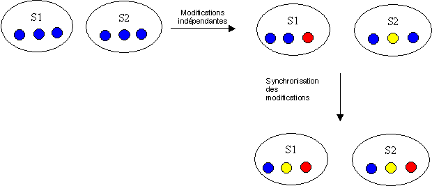
Figure 4 : Principe de la synchronisation
Plusieurs solutions sont possibles,
pour aboutir à ce que les bases soient à nouveau identiques : duplication,
réplication et « 2 ways » synchronisation.
La duplication se contente de copier
les données présentes sur le serveur, sans maintenir de journal de
modifications.
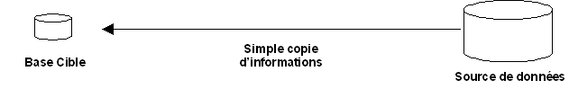
Figure 5 : La duplication
La réplication revient à copier les
données du serveur vers les différents terminaux mobiles en appliquant les
modifications enregistrées dans un journal. Dans cette architecture, on
interdit alors aux utilisateurs de modifier les données : les bases mobiles
sont en mode consultation.
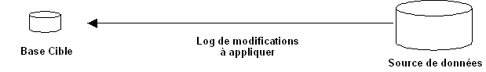
Figure 6 : La réplication
A partir du moment où les données
sont modifiables en local, la synchronisation se complique. Par exemple, dans
le cas de l’agenda partagé, si deux personnes ont pris un rendez-vous avec le
même client, à la même heure, il faut clairement faire un choix du type :
·
favoriser un utilisateur en conservant son
rendez-vous, en définissant des priorités
·
ou laisser les deux rendez-vous et à la charge
des utilisateurs de résoudre le conflit.
Pour résoudre les conflits, il faut,
dans un premier temps, être capable de les détecter. La « 2 ways »
synchronisation se base sur tout ou partie des éléments d’algorithmique
suivants :
·
« GUID /
LUID » : les données concernées par la synchronisation possède un identifiant
côté serveur « Global Unique ID » et un identifiant côté terminal client «
Local Unique ID ». Les tables de correspondances GUID / LUID, propres à chaque
utilisateur, sont consolidées durant la phase de synchronisation,
·
« Journal de modifications »: les modifications
de données effectuées sur le device mobile sont mémorisées dans cette table,
·
«
TimeStamp » : les données sont estampillées, de façon à pouvoir identifier
instantanément si leur état a été changé,
·
« Niveau de granularité » : en cas de conflit,
il faut choisir le niveau de granularité de la synchronisation : copier tous
les champs d’une donnée (écraser les anciennes valeurs par les nouvelles) ou
bien isoler les champs modifiés pour les copier de façon individuelle.
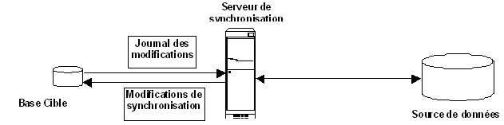
Figure 7 : La « two way » synchronisation
Les performances de la « 2 ways »
synchronisation sont liées tant à la complexité de l’algorithmique (pas de
conflit, écrasement, champ individuel) qu’à la bande passante utilisée pour les
transmissions des données mais aussi aux éléments d’algorithmique (journaux,
timestamp, LUID).
De nombreuses solutions de
synchronisation utilisent des bases miroirs liées à chaque utilisateur pour
simplifier l’algorithmique de synchronisation tout en soulageant le serveur
central de données.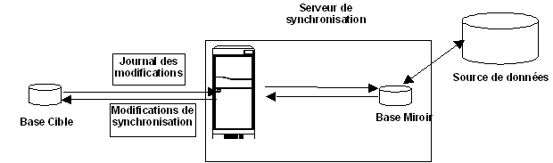
Figure 8 : La « two way » synchronisation
avec base miroir
5.1.2. Pourquoi synchroniser ?
Nous l’avons dit, l’une des problématiques concerne l’accès au réseau. Or il va de soi que de permettre à un utilisateur de travailler sans être dépendant du réseau et tout en étant assuré que son travail sera mis à jour automatiquement sur le système d’information, est un apport intéressant. En mobilité le premier apport de la synchronisation est de garantir un tel fonctionnement.
Une application mobile qui se synchronise ne nécessite pas un mode connecté qui, en plus d’être coûteux, n’est pas tolérant aux pannes. Une application n’a d’intérêt à être en mode connecté que si elle nécessite des données en temps réel ; si ce n’est pas le cas l’ensemble des traitements peut être effectué en local et mis à jour plus tard. Une application synchronisable à l’avantage d’être totalement autonome et donc d’évoluer seule tant au niveau de ses données que de l’application elle-même.
Cependant, toutes les applications ne se prêtent pas à la synchronisation :
- les applications collaboratives ou temps réel (réservation de billets d’avion, gestion de stock, réunions…)
- les applications qui nécessitent des traitements lourds ou complexes, généralement délégués aux gros systèmes (calcul d’une prime d’assurance…)
- les applications qui nécessiteraient d’échanger beaucoup de données (limitation de taille et coût de la bande passante)
- les applications qui requièrent des bases de données locales supérieures aux ressources du terminal mobile.
A noter que la synchronisation apporte aussi certains avantages liés à la distribution des applications sur chaque terminal (montée en charge, robustesse…)
La synchronisation dans sa définition de base en milieu mobile
se rapporte souvent à des applications basiques de type PIM (Personal
Information Manager), et implique d’avoir des schémas identiques au niveau des
bases. Ce que nous recherchons, c’est de conserver le principe de
synchronisation, mais entre des applications aux données communes, ayant des
structures différentes.
5.1.3. Normes (SyncML)
SyncML est une initiative de IBM,
Nokia, Ericsson, Lotus, Matsushita, Motorola, Palm, Psion et Startfish soutenues
par plus de 600 sociétés.
En février 2000, les fondateurs de SyncML
perçoivent le manque d’un standard de synchronisation pour l’informatique
mobile, et publient dès Décembre 2000, la version 1.0 de SyncML.
SyncML est alors un protocole de
synchronisation et de représentation de données, qui a pour objectif de proposer
un standard de synchronisation face à l’hétérogénéité des PIM des terminaux
mobiles. Depuis, les membres de SyncML s’emploient pour faire du protocole « le
driver de l’Internet mobile », en étendant les fonctionnalités de
synchronisation à tous les types de données, aux applications…
XRelational, qui est aujourd’hui en
phase de finalisation par les membres de SyncML, permettra notamment de
standardiser la synchronisation entre les bases de données relationnelles.
Basé sur XML pour le côté
représentation, SyncML supporte les protocoles de transport HTTP, WSP et OBEX. L’adoption
de la norme par le 3GPP présage que SyncML deviendra de facto le standard de
synchronisation pour le monde de la téléphonie mobile. C’est pourquoi, on voit
naître chaque jour de nouvelles solutions se basant sur ce protocole. Le plus
gros intérêt de SyncML est certainement qu’à moyen terme, on peut espérer
disposer sur tous les terminaux mobiles d’un même client de synchronisation, ce
qui permettra de ne plus avoir à télécharger sur le terminal cible un produit
de synchronisation. De plus, les serveurs basés sur SyncML permettront d’offrir
des plates-formes de synchronisation inter-opérables.
5.2.
XML[7]
XML est une technologie
incontournable dans l’entreprise. On la retrouve dans des contextes aussi
divers que les applications distribuées, la configuration de produits, les
annuaires, l’édition de documents, la diffusion de contenu sur le Web ou la
gestion de la connaissance.
5.2.1. Présentation d'XML
5.2.1.1.
Historique
L’utilisation d’Internet a considérablement augmenté ces dernières années. Cette croissance est à associer à la naissance de deux standards :
- HyperText Markup Language (HTML) : cette spécification décrit un langage associant des données et la manière de présenter ces données
-
HyperText Transfer Protocol (HTTP) : cette
spécification décrit un protocole de transport d’informations sur Internet.
Contrairement au HTTP, le HTML est un
standard qui a beaucoup évolué depuis son apparition. A l’origine, dans un
document HTML, il n’y avait pas de prédominance entre les données et la
présentation de ces données, un document étant alors constitué à part égale entre
les données et la présentation. Rapidement, les normes successives de HTML ont laissé
la présentation prendre de plus en plus de place dans un document HTML. Il est donc
apparu nécessaire de définir un nouveau langage qui serait centré sur la
description des données : eXtensible Markup Language (XML).
5.2.1.2.
Définition
XML est une recommandation du W3C. C’est est un langage à balise définissant un format universel de représentation des données. Un document XML contient à la fois des données et les indications sur le rôle que jouent ces données. Ces indications permettent de déterminer la structure du document : ce sont des balises.
XML est une sous partie de SGML
(Standard Generalized Markup Langage) définie par l’ISO (ISO 8879). SGML est un
langage international de documentation normalisée, standard de fait dans le
milieu de la gestion documentaire. On a souvent coutume de dire que "XML
présente 80% des fonctionnalités de SGML pour seulement 20% de sa complexité".
XML -
Les dix commandements
Tu seras utilisable
sur Internet
Tu supporteras une
grande diversité d’applications
Tu seras compatible
SGML
Il devra être aisé
d’écrire des programmes qui te manipulent
Tu auras le minimum de
fonctions optionnelles
Tu seras lisible par
l'homme
Tu seras disponible
rapidement
La spécification qui
te décrira devra être simple et concise
Un document te
respectant devra être facile à construire
Tu pourras ne pas être
concis.
5.2.1.3. Validation
Une grammaire définit la syntaxe d’un
langage. En XML, le langage est la liste des balises qui sont utilisables et la
syntaxe correspond à l’organisation de ces balises. Par conséquent, un document
XML est compréhensible si sa grammaire est bien définie.
Les documents DTD[8] et XML-Schema[9] permettent de décrire des grammaires de documents XML. Ce sont deux approches différentes, les DTD étant plus simples à mettre en place mais décrivant un document XML de manière moins complète. Si deux documents XML respectent la structure définie dans une DTD ou un XML-Schema, on dit qu’ils respectent la même grammaire.
Un document XML bien formé est
un document qui respecte la syntaxe XML.
Un document XML valide est un document bien formé qui se conforme à la définition de la grammaire (DTD ou Schéma) à laquelle il est associé.
DTD signifie « Document Type Definition » (définition du type de document) : c'est la grammaire historique des documents XML. La puissance de description des DTD est faible : une DTD permet uniquement de décrire la structure d'un document XML (liste des balises et organisations des balises), et non la typologie des données contenues (chaîne de caractères, date, entier, etc).. Les DTD sont donc à utiliser lorsque la typologie des données contenues dans le document XML est sans importance. On appelle validation, le mécanisme qui vérifie qu’un document XML respecte une DTD.
XML-Schema est une recommandation du W3C, au même titre que XML. Les documents XML-Schema permettent de décrire la structure d'un document XML d'une façon beaucoup plus complète que les DTD. Il est par exemple possible de spécifier la typologie des données (String, Decimal, etc..) que va contenir le document XML décrit par le XML-Schema
Lors de l’analyse du document XML, la
notion de « bien formé » et de « valide » prend un sens, il
est possible de rejeter le traitement d’un document si celui-ci ne respecte pas
une certaine grammaire, ou s’il est mal construit.
5.2.1.4. Extensions
Un ensemble de spécifications autour d’XML se sont construites pour compléter et améliorer la spécification. XML-Schema présenté ci-dessus en est un exemple. Parmi les plus importantes nous citerons :
- les espaces de nommages[10] : recommandation du W3C, ils permettent :
o de mélanger du vocabulaire XML provenant de plusieurs grammaires,
o d’identifier de manière unique les balises XML.
-
XLink[11] :
recommandation W3C, cette spécification permet de modéliser les liens entre
documents.
-
XML Base[12] :
recommandation du W3C, cette norme très simple prévoit l’ajout d’un attribut
« xml:base » à un élément pour définir l’adresse de base de tous les
liens définis dans ses sous éléments.
-
XPointer[13] :
vient compléter la spécification XLink, en offrant un moyen de pointer sur des
éléments spécifiques d’un document
- XPath[14] : recommandation du W3C, cette norme définit un langage de requêtes permettant de se déplacer dans un document XML
-
XQuery[15] :
recommandation du W3C, cette norme définit aussi un langage de requêtes plus
proche de SQL
- XSL[16] : XML StyleSheet Language est une recommandation du W3C visant à définir la représentation des données XML, elle est composée de deux sous partie :
o XSLT[17] ajoute un langage permettant la transformation de document XML en XML, HTML ou texte
o XSL-FO[18] ajoute un langage de présentation documentaire
Il en existe bien d’autres que nous n’énumérerons pas ici, et qui sont spécifique à des domaines particuliers (e.g. : MathML[19] pour la description de données mathématiques, SVG[20] pour la représentation de dessins vectoriels, XML Signature[21] pour gérer l’authenticité de documents …)
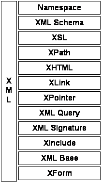
Figure 9 : extensions XML
5.2.1.5. Analyse et traitement
Il existe principalement trois approches pour accéder à un
document XML :
- Les parseurs type « callback » : se basent sur un modèle d’envoi d’événements. Un parseur parcourt le document XML et renvoie un événement à chaque élément rencontré. Le programmeur définit le traitement à effectuer pour chaque événement, et peut ainsi construire sa propre structure de données. Cette approche n’est cependant pas adaptée lorsqu’on désire modifier le document XML. SAX[22] (Simple API For XML) est l’API la plus connue se basant sur cette technique. Elle est indépendante du langage de programmation.
- Les parseurs type « arbre » : utilisent la structure arborescente d’un document XML. Le parseur charge le document XML en mémoire, sous la forme d’un arbre. DOM[23] (Document Objet Model) est l’API la plus connue répondant à cette approche. L’utilisateur parcourt et modifie l’arbre à l’aide des interfaces définies par le W3C. Cette API est aussi indépendante du langage de programmation.
-
Le « data binding » : cette méthode
permet de charger un document XML en mémoire sous la forme d’un objet que l’on
manipule en utilisant des accesseurs. On sauvegarde ensuite le document en sérializant
l’objet en XML. Cette approche permet de manipuler uniquement des objets Java.
Les outils permettant de faire du « data binding » sont assez récents
: spécification JAXB de Sun, Castor de Exolab, Zeus de Enhydra…, mais cette
approche est sans doute la plus intuitive pour les programmeurs Java.
5.2.2. Pourquoi XML ?
Dans le cadre de notre projet, il est indispensable de miser sur un langage qui soit capable de représenter des données de manière standard. L’émergence d’XML et sa simplicité ont initialisé le choix, mais c’est surtout l’extension XSLT, qui permet de manipuler la structure sans toucher aux données, ce qui est le critère le plus important dans ce choix : avoir un format de données commun ainsi que la capacité d’obtenir une structure identique est décisif et facilite l’échange.
5.3. Synchronisation XML
Ces deux technologies prises séparément, nous l’avons vu, ont leur intérêt, mais c’est dans leur fusion, que l’on va trouver de meilleures réponses. En effet la synchronisation XML va consister à comparer deux documents XML de même structure. Ainsi et grâce à la technologie XSLT, il est possible de synchroniser des données de même format, structurées de façon différente. Quelles que soit les bases de données et la façon dont sont organisées les données au sein de celles-ci une synchronisation reste possible à partir du moment où il existe des données communes et de même format.
5.3.1. Travaux de recherche
Les techniques de synchronisation entre bases de données identiques font déjà l’objet de produits commercialisés. Par contre les techniques de synchronisation XML, bien que très avancées, font encore partie du domaine de la recherche. Il est d’ailleurs intéressant de noter que ces recherches sont, pour certaines, réalisées dans le secteur des bases de données.
Les bases de données sont cependant
considérées comme une représentation structurée des données. Pour XML on parle
de données semi-structurées, c'est-à-dire une représentation qui peut
s’envisager comme une simplification du modèle relationnel classique, un des
fondements des bases de données traditionnelles, dans lequel on autorise une
structure moins rigide et homogène des « champs de données ». Ce
modèle de données s’est révélé très utile dans la représentation de familles de
documents variés: multimédia, hypertexte, données scientifiques, ....
Différents projets ont été mis en œuvre visant à trouver des algorithmes de comparaison et de détection de changements, cette fois-ci au sein de données semi-structurées comme XML. Il faut cependant différencier deux catégories de travaux :
- La comparaison de deux structures XML et l’extraction des informations relatives aux changements : « 2 way merge »
o XyDiff [COB01]
: outil de détection de changements, issu des travaux de Gregory COBENA, dans
le cadre du projet GEMO [GEM00] de l’INRIA (développement en C++)
o XMLTreeDiff [CEP99] : implémentation en Java d’un outil de comparaison et de mise à jour de documents XML basé sur DOM.
o XDiff
[WDC02] : outil de détection de changements, issu des travaux de Yuan Wang,
David J. DeWitt, Jin-Yi Cai de l’université du Wisconsin. (développement en
Java et C++)
o XmlDiff
[LOG] : outil en ligne de commande de comparaison de fichier XML ou
d’arbre DOM, implémenté en Python
o XML::SemanticDiff
[HAM01] : implémentation en Perl pour la comparaison de fichier XML
o Diffmk [WAL01] : implémentation d’un algorithme de détection de changements en Java
o DiffXml
et PatchXML [MOU02] : implémentation en Java d’un algorithme de
comparaison et de mise a jour de documents XML, incluant un format de
représentation des changements : DUL (Delta Update Language)
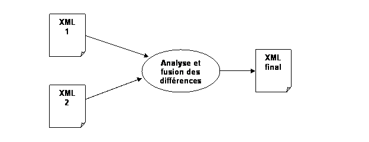
- La comparaison de deux structures XML, à l’origine identiques, et séparément modifiées : « 3 way merge »
o XML
Diff and Merge tool [IBM99]: Outil issu des laboratoires de recherches d’IBM,
permettant la comparaison et la fusion de documents XML à l’aide d’un outil
graphique. Les sources ne sont pas disponibles et il n’y a pas eu de
publication sur les techniques employées.
o 3DM [TLD01]:
Thèse de l’université d’Helsinki, réalisation d’un outil de fusion de documents
XML en Java (les sources du projet sont disponibles)
o DeltaXML
[DEL] : Entreprise spécialisée dans XML, réalisation d’outils de fusion et
de comparaisons de documents XML, publications diverses sur ses technologies.
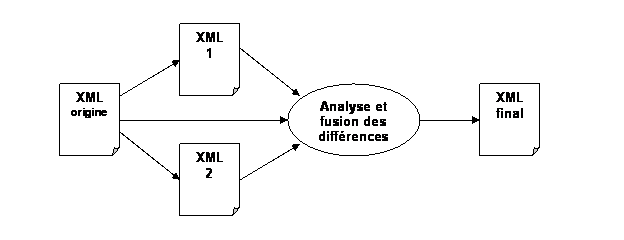
La plupart des précédents travaux se sont axés dans la recherche de différence entre simples fichiers textes. L’outil diff du GNU (notamment utilisé par CVS) est sans doute l’un des plus connu. Il utilise l’algorithme LCS (Long Common Subsequence) [MYE86]. Cependant les travaux de S.Chawathe, A. Rajaraman et H.Garcia-Molina [CRGM96] notent que cet outil ne peut être généralisé dans le cas de comparaison de donnée structurées de façon hiérarchiques comme SGML ou XML qui place leur segment de données dans des balises, impliquant ainsi la notion de contexte pour chacun. Cet outil n’est donc utile que pour des comparaisons de textes.
L’outil AT&T Internet Difference Engine [DBA96, DBCK98] utilise HtmlDiff [BER] pour déterminer les différences entre deux pages HTML. HtmlDiff traite les deux documents HTML comme une séquence d’éléments où un élément est une phrase comprise entre deux balises ou tout simplement une phrase, et utilise un algorithme LCS plus évolué [HIR77] pour trouver la meilleure correspondance entre deux éléments. Cependant cette technique ne peut être utilisée avec XML, car chaque balise impose un contexte précis et les correspondances ne peuvent être faite simplement au niveau du contenu des balises.
Les documents XML étant représentés sous forme d’arbres, il apparaît évident qu’une technique de correction d’arbres [SEL77, TAI79, HDO82] semble plus appropriée pour détecter les changements. K.Zhang, R.Statman et D.Shasha proposent un algorithme de ce type, basé sur deux arbres ordonnés et labellisés [ZSH89] : soit deux arbres T1 et T2, pour lesquels chaque nœud a un label associé (c’est le cas pour XML), l’algorithme permet d’obtenir un arbre résultant de la comparaison et présentant les différences. C’est encore aujourd’hui le meilleur résultat obtenu sur le problème des corrections d’arbres.
S.Chawathe, A. Rajaraman et H.Garcia-Molina [CRGM96] ont formulé la notion de détection de changements entre documents hiérarchiquement structurés, et proposés un nouvel algorithme. Cependant celui-ci n’apportant pas un résultat optimal, ils ont ensuite proposé une technique heuristique [CGM97] notamment reprise dans le projet 3DM, mais qui n’est optimal que pour des documents de moyenne structure (moins de 250 nœuds).
L’outil XMLTreeDiff d’IBM [CEP99] permet une plus large comparaison de documents XML, en appliquant une méthode répartie en deux étapes. La première consiste à évaluer la valeur de hachage des nœuds des arbres en utilisant DOMHash [MTU98], pour réduire la taille des documents en supprimant les sous-arbres identiques. Ensuite, on utilise l’algorithme de K.Zhang et D.Sasha [ZSH89] pour extraire les différences. Cependant la combinaison de ces deux techniques pose parfois des problèmes de conflits et n’est pas optimale.
Récemment les travaux de Gregory Cobena dans le cadre du projet GEMO de l’INRIA [CAM02] ont permis d’aboutir à un outil de comparaison d’arbres plus performant : XyDiff. L’algorithme combine d’abord une signature (la valeur de hachage) et un poids (la taille du sous arbre) pour chaque nœud de l’arbre, puis il analyse les deux documents en comparant les signatures et le poids de chaque nœud.
Cependant ces deux derniers travaux sont basés sur des arbres ordonnés. Concernant la comparaison d’arbres non-ordonnés les travaux de Yuan Wang, David J. DeWitt, Jin-Yi Cai [WDC02] de l’université du Wisconsin sont sûrement les plus avancés.
Enfin tous ces travaux ne s’appliquent
qu’à la première catégorie et n’offrent pas de solution de fusion des
changements. Dans ce domaine les travaux de Tancrède Lindholm de l’université
d’Helsinki [TLI01] et de la société DeltaXML [DEL] ont permis d’apporter des
réponses concrètes dans ce domaine en proposant des outils performants.
Bien que les deux catégories soient
différentes, elles ont des problématiques communes, nous présenterons ici les
différentes méthodologies utilisées pour y faire face.
5.3.2. Méthodologie
5.3.2.1. Détection des changements : "matching"
De façon commune aux deux approches,
la première étape consiste à établir les correspondances entre les arbres XML,
en terme de structures et en terme de données, sachant que 2 éléments au sens
XML du terme, sont équivalents à partir du moment où la structure et les
données sont équivalentes ; un changement de structure indique un mouvement,
ou une copie, un changement de donnée indique une modification, et enfin les
deux réunis indiquent une insertion. Cette étape de correspondance se retrouve
dans toutes les solutions présentées.
Ensuite les techniques diffèrent
entre ceux qui proposent d’écrire les changements dans un document séparé et
ceux qui « annotent » le XML d’origine. Les deux approches sont
efficaces, la première permettant d’exploiter les changements indépendamment du
document d’origine et l’autre permet de conserver le lien et de produire un
autre document, via XSLT, interprétant ces changements.
L’algorithmique utilisée n’est pas la même dans tous les travaux car tout dépend des objectifs attendus, entre performance, rapidité ou encore capacité d’analyse. L’algorithme de détection des changements dans le projet 3DM [TLI01], utilise la solution heuristique de S.Chawathe et H. Garcia-Molina [CGM97] citée précédemment, favorisant la rapidité à partir du moment où la structure des données est relativement simple. L’algorithme utilisé par DeltaXML [DEL] est plus performant pour les documents à large structure, ce que confirme d’ailleurs Gregory COBENA du projet GEMO de l’INRIA [CAM02], mais il est optimisé pour des documents contenant peu de différences.
A noter que les travaux cités ci-dessus se basent sur le postulat que les structures sont ordonnées, c'est-à-dire qu’au niveau d’un nœud dans la structure, seul le nœud parent compte, sa position par rapport aux autres nœuds du même parent n’ayant pas d’importance. L’analyse des correspondances de structures non ordonnées est un problème bien plus complexe auquel le projet XDiff [WDC02] cité précédemment apporte une solution
5.3.2.2. Application des changements, mode « 2 way » : "patching"
Une fois les changements détectés, il est alors nécessaire de les appliquer au document XML d’origine de façon à le faire correspondre au document XML modifié. Dans le cas où les changements ont été inscrits dans un document XML (solution utilisée par l’algorithme 3DM), le fichier d’origine est analysé et les modifications apportées. Par ailleurs si les changements font l’objet d’annotations au sein même du document XML, c’est XSLT qui sera utilisé pour extraire la version mise à jour du document XML, solution préconisée par DeltaXML.
5.3.2.3. Fusion des changements, mode « 3 way » : "merging"
Grâce aux deux techniques présentées
ci-dessus, il est donc maintenant apparemment aisé d’appliquer la fusion. Mais
dans le cas d’une problématique où les documents XML ont été modifiés
séparément à partir d’une même base, des conflits peuvent survenir. C’est là un
des problèmes majeurs de la fusion et de la synchronisation.
En effet les deux arbres ont pu effectuer des
modifications ne pouvant être fusionnées. Les cas possibles de conflits
sont :
-
update/update : les arbres ont modifié différemment la donnée d’un
même élément
-
update/delete : un des arbres a supprimé un élément alors que
l’autre a modifié la donnée
-
move/move : les arbres ont déplacé différemment un même élément
-
move/delete : l’un des arbres a supprimé un élément alors que
l’autre l’a déplacé
Parmi les solutions présentées, DeltaXML et le
projet 3DM apportent une réponse concrète à cette problématique, leur
algorithme permettant une détection automatique des conflits. La résolution de
ceux-ci n’est pas envisageable, car elle dépend d’éléments externes souvent
liés à l’interprétation même des données.
6. Le modèle services Web en milieu mobile
La nouvelle technologie des services Web apporte des solutions intéressantes dans le domaine des applications mobiles. Après une brève présentation générale nous verrons leur intérêt en milieu mobile.
6.1. Présentation des Services Web
Les services Web[24] sont
des applications modulaires accessibles de façon standard via les protocoles
standard du Web. Le principe est d’utiliser des standards basés sur XML pour
échanger de l’information entre systèmes hétérogènes ou exécuter des
traitements spécifiques liés à un métier via l’Internet.
Les Services Web s’associent à deux spécifications XML:
·
SOAP[25] :
Simple Object Access Protocol : protocole définissant le transport de
donnée et l’interopérabilité. Cette spécification, initialement créé par
Microsoft qui en a fait don à la communauté, est depuis maintenu et suivie par
un groupe du W3C et fait l’objet d’une recommandation. De plus celle-ci est
basé sur le protocoles standard du Web ainsi elle peut fonctionner tant sur
HTTP, que sur SMTP, voire d’autres encore.
·
WSDL[26] :
Web Services Description Language : pour la description des services
(sémantique d’appels, protocoles utilisés, serveurs d’hébergements).
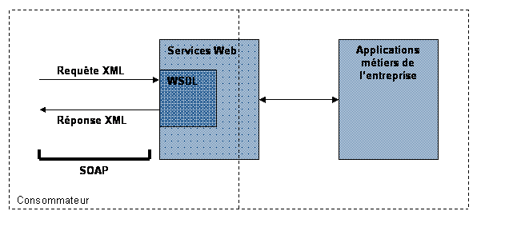
Beaucoup d’autres spécifications sont depuis venues se greffer, pour définir des annuaires de Services Web (UDDI, WSIF, …), pour améliorer la sécurité (WS-Security, …), pour définir des scénarios et des enchaînements d’appels de services Web de façon standard, définis sous le nom de processus métier (BPML), pour orchestrer ces enchaînements (XLang, WSFL, …).
Cette technologie en est à ses débuts mais reste très prometteuse car elle offre une grande possibilité d’interopérabilité entre systèmes. Les entreprises en général misent de plus en plus sur cette technologie.
6.2. Pourquoi les Services Web ?
L’intérêt des services Web, en milieu mobile, est qu’ils offrent la possibilité de communiquer avec une application distante via l’Internet : les spécifications sont telles que cette communication devient transparente pour le programmeur. Pour une application mobile il est alors possible de pouvoir effectuer un traitement lourd à distance par une simple requête/réponse, réduite à l’appel d’une méthode (au sens programmation orientée objet), voire de n’être qu’une simple application visuelle, le fonctionnel restant sur le serveur.
Des librairies existent déjà en Java permettant de faire appel à des services Web depuis des plates-formes mobile comme J2ME (c.f. : § 3.3.1) ou Personal Java. L’un des objectifs principaux de la plate-forme .NET de Microsoft est de permettre l’appel de Services Web depuis n’importe quel support, dont les mobiles utilisant des systèmes de l’offre Windows Mobile. Bien que ces deux plates-formes soient concurrentes, l’objectif principal des Services Web est qu’elles puissent communiquer.
6.3. Avantages et inconvénients
En milieu mobile, les services Web ont l’avantage de pouvoir alléger considérablement la taille des applications sur les supports mobiles qui ont souvent un environnement de faible capacité. Ils permettent de faciliter les développements de services mobiles, en offrant une manière simple d’accéder à distance à un serveur de donnée.
Cependant ils nécessitent que la connexion entre les applications fonctionne sur un mode connecté. Rien n’est prévu dans les spécifications pour gérer la problématique des fluctuations des réseaux mobiles. Il est possible de pallier cela en utilisant un protocole assurant l’acheminement des données sur le réseau. Aujourd’hui le protocole HTTP ne permet pas d’assurer cela. Les messageries asynchrones (M.O.M.[27]) souvent utilisées en intranet pour répondre à des problématiques d’E.A.I[28]. ont été conçues dans ce sens. Nous avons alors étudié la possibilité de mettre en œuvre un système de Services Web basé sur un protocole asynchrone (cf : chap. 14) ; mais la mise en œuvre d’une telle architecture reste lourde et pas toujours adapté à l’existant.
7. Projet : analyse
7.1. Problématiques
7.1.1. Une interface multi plates-formes
Concernant les outils mobiles, tels que les PDA et les téléphones, nous avons déjà évoqué la spécification J2ME de Sun permettant un environnement de déploiement similaire sur des plates-formes mobiles différentes. Cependant ceci ne pourra pas s’appliquer aux clés USB, ni aux sociétés éditrices d’outils mobiles non compatibles avec cette spécification (e.g. : Compaq iPaq). Il est donc évident que pour la partie visuelle, il n’est pas possible d’avoir un développement unique et qu’il faudra se reposer sur un couche fonctionnelle générique et se restreindre à développer une interface pour au moins les deux types de plates-formes suivantes :
- clé USB
- plate-forme J2ME
7.1.2. Echanger des données de manière générique
L’objectif est d’être capable de récupérer, d’envoyer et/ou de synchroniser des données avec des applications médicales de tous types, e.g. : récupérer automatiquement les résultats d’examens depuis une application d’un laboratoire d’hématologie. C’est typiquement le schéma auquel les Services Web veulent répondre. Cependant, dans un environnement mettant en œuvre des Services Web, les deux applications qui communiquent se doivent d’implémenter cette technologie, ce qui est rarement le cas en milieu médical, mais tend à le devenir. Il faudra donc prévoir ici un schéma permettant d’évoluer vers des Services Web.
Par ailleurs, il faut considérer q’un échange ne peut se faire que si les applications se sont mises d’accord sur un format d’échange commun. Or à l’heure actuelle, il existe plusieurs formats d’échanges standards, et de plus aucun n’étant imposé, les applications utilisent parfois un format propriétaire. Il nous faut donc nous adapter mais cela ne pourra se faire si nous n’imposons pas deux principes fondamentaux :
1. les applications destinatrices (e.g. : ResUrgences, S.I.H …) devront avoir un format d’échange de donnée permettant d’importer et d’exporter les informations voulues (dans notre cas les informations du dossier médical)
Note : c’est le cas pour
ResUrgences, et l’expérience apportée lors des installations de cette
application au sein des S.A.U. a montré que c’est aussi le cas pour la plupart
des applications de santé dans les C.H.U ou les laboratoires, moins du coté des
applications de médecins (spécialiste ou généraliste). Cependant les travaux de
normalisation dans le domaine médical amènent à penser que les efforts
d’uniformisation des échanges sont en cours (c.f. : 8.2.1) et sachant que toute « bonne » application
de santé se doit d’échanger de l’information, les éditeurs de logiciel dans ce
domaine seront amenés à mettre en œuvre un système d’échanges pour leurs
applications.
2. l’application source (HealthKey) devra utiliser un format ouvert et extensible, capable de formaliser ses données et de se transformer pour s’adapter à un autre format, tant au niveau de la récupération que de l’envoi de données
Sachant désormais que toutes les applications, avec lesquelles notre application échangera de l’information, auront obligatoirement un format d’échange de données sans que celui-ci soit normalisé, cela implique q’un système qui se voudrait universellement intégrable soit en fait capable de transformer ses données dans tous les formats d’échanges possibles. Bien que possible cela serait très difficile à maintenir. La notion d’ « universelle » n’a donc pas de sens, mais il est tout à fait possible d’avoir, dans un domaine particulier, une application capable de s’adapter à plusieurs types d’applications, si ce domaine détient déjà des formats d’échanges normalisés. C’est le cas du domaine de la santé, qui compte encore un grand nombre de formats d’échanges hétérogènes et incompatibles, mais qui aujourd’hui cherche des solutions pour pouvoir faciliter au maximum l’échange de données entre les différentes applications des différents métiers du monde de la santé. Il nous est donc possible de généraliser l’intégration d’applications médicales
Nous avons déjà évoqué précédemment la notion de
synchronisation, mais si l’on en reprend la définition, il est évident que dans
son concept de base, celle-ci ne conviendra pas. En effet, une synchronisation
suppose un échange entre deux bases de données identiques ; or dans notre
cas cela ne sera produira jamais, chaque application ayant sa propre structure
de données. P
Il y a bien sûr des solutions pour arriver à faire fonctionner cet exemple. Mais ces solutions (comme les « conduit » sous PalmOS qui permettent de développer une synchronisation pour cette plate-forme, ou encore SyncML) n’apporteront jamais la possibilité de synchroniser les données de façon générique, c’est à dire quelles que soit les plates-formes, les systèmes, les langages et surtout la structure des données. Serait-il possible alors d’étendre le principe de synchronisation à un niveau supérieur à celui de bases de données à bases de données ? C’est à dire de créer un modèle de synchronisation capable de synchroniser des données entre deux systèmes différents, sans se soucier de la technologie utilisée pour stocker les données, ni de celle pour leur exploitation. C’est la question à laquelle nous allons tenter de répondre dans le chapitre suivant (c.f. : § 8.2) ;
7.1.3. Gestion de conflits et sécurité
Nous l’avons vu, la synchronisation implique une problématique de gestion des conflits dès lors que les modifications apportées aux systèmes à synchroniser se sont faites séparément. Les outils de synchronisation XML apportent le moyen de détecter ces conflits. Reste que la résolution des conflits est à mettre en œuvre au sein de l’application.
Par ailleurs, l’échange d’informations médicales implique un
transfert de données plus ou moins importantes sur le réseau. La notion de
sécurité est alors primordiale et doit être prévue dès le début du projet.
7.2. Approche
Nous allons donc tenter de répondre à ces trois problématiques.
Pour rendre l’application multi plates-formes nous devrons établir un modèle de conception en couche de façon à bien séparer la partie visuelle de la partie fonctionnelle de l’application.
Pour rendre l’application interfaçable avec d’autres applications du domaine médical, nous devons définir un modèle générique d’échanges permettant l’importation, l’exportation et la synchronisation de données.
La mise en oeuvre du modèle d’échange, noyau de communication de l’application, se fera suivant trois étapes successives :
- La première étape consiste à recenser l’ensemble des formats d’échanges existants, en extraire les plus communs et les plus utilisés, en se basant sur les initiatives de normalisation et d’uniformisation en cours dans le domaine médical.
-
La deuxième étape consiste à définir les
fonctionnements de l’importation, de l’exportation, et de la synchronisation,
en se basant sur XML pour obtenir un modèle le plus générique possible.
- Enfin la dernière étape consistera à mettre en œuvre ce modèle avec les formats d’échanges recensés et de développer la couche fonctionnelle de cette partie de l’application.
Enfin pour rendre l’application sécurisée, il faudra :
- définir les besoins, et les niveaux de sécurité attendus,
- intégrer la sécurité dans l’application.
7.3.
Architecture logicielle
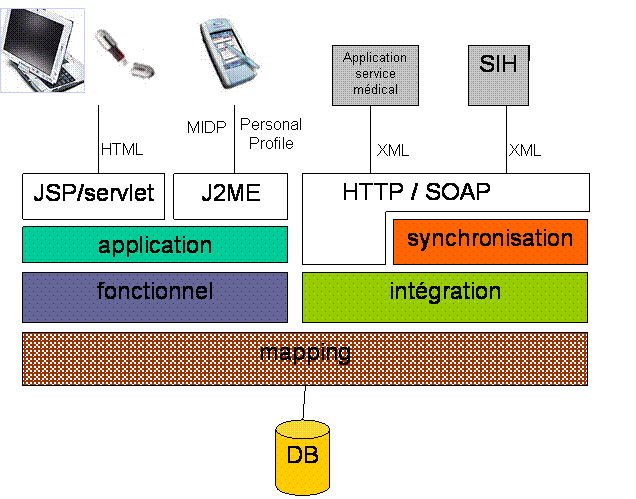
Figure 10 :
Architecture logicielle de l’application HealthKey
8. Projet : Etude
8.1. Interface visuelle, modèle en couches
L’utilisation d’un langage orienté objet permet avant tout de bien organiser son code. Comme nous l’avons vu sur le schéma de l’architecture logicielle (c.f. : Figure 10), le code est structuré en couches, chacune de ces couches étant indépendante, ce qui permet ainsi la réutilisation et une meilleure maintenabilité.
Concernant la partie visuelle, nous
considérons que quelle que soit la technologie utilisée (page Web dynamique ou
composant visuel d’une application cliente), le modèle objet associé doit
impérativement permettre de modifier la partie visuelle, sans affecter la
partie fonctionnelle. Ce modèle existe : c’est MVC. A l'origine, MVC
(Model View Controller) a été créé pour structurer les applications écrites en langage
SmallTalk. Depuis, ce modèle a été réutilisé avec d’autres langages objet. Ce
modèle présente une structure à 3 niveaux :
- Le
modèle : noyau de l’application, contenant l'ensemble des données
utilisées par l'application, indépendamment de leur représentation graphique et
de leur interaction avec l'utilisateur
- La vue :
les différentes façons de présenter à l'écran les données du modèle
- Le
contrôleur : les différentes façons d'agir sur les données du modèle
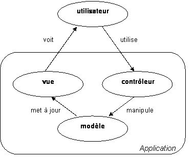
Figure 11 : modèle MVC
C’est une technique de conception fréquemment employée par les programmes orientés objets pour faciliter la modularité, la flexibilité et la réutilisation. Une application MVC définit un modèle, des vues et des contrôleurs : par exemple, pour une application J2EE, le modèle est défini par un EJB, les contrôleurs sont les Servlet, les vues sont les pages JSP. Le modèle MVC est une avancée importante en terme d'architecture d'applications Web.
C’est sur ce modèle et la notion de
couches applicatives, que nous allons élaborer le fonctionnel et le visuel de
l’application HealthKey. L’objectif étant à terme de pouvoir proposer
l’application sur d’autres supports que la clé sans avoir à réécrire l’ensemble
du code.
8.2. Modèle générique d’échange de données
L’échange de données va consister à :
- importer des données préalablement converties au format XML, dans une base de données, soit directement, soit en utilisant une couche d’objets (au sens langage de programmation),
- exporter des données au format XML et être capable de les reconvertir dans un format précis,
- synchroniser des données en utilisant :
o un format XML commun,
o les deux traitements précédents pour élaborer ce format et affecter les changements respectivement aux deux applications.
8.2.1. Normes et standards d’échanges dans le domaine médical
Bien qu’aujourd’hui encore tous les
échanges médicaux ne soient pas normalisés ou standardisés, beaucoup d’initiatives,
tant nationales et européennes qu’internationales, montrent que l’objectif est
d’y arriver. Des standards existent, des normes sont en cours d’élaboration, mais
nous nous intéresserons plus particulièrement ici à celles qui traitent du
dossier médical.
8.2.1.1. Normes
CEN/TC251[29]
Ni l’AFNOR, ni le CEN (Comité Européen de Normalisation), ni l’ISO n’ont aujourd’hui une norme définie pour le dossier médical, mais tous y travaillent et y collaborent. Les travaux du comité technique 251 (Comité Informatique et Santé) du CEN sont sûrement les plus avancés. Ils portent sur la modélisation du secteur santé. EDISANTE et l'AFNOR participent à ce comité. Quatre groupes de travail (WG pour Working Group) se partagent les travaux :
· WG1 (Information Models) compte 4 équipes-projets pour le EHR (Electronic Healtcare Record) ou dossier médical communicant avec la définition d'une architecture commune (pré-norme), liste des termes en-têtes des rubriques des dossiers), contrôle de l'accès au dossier et définitions des normes d'échange des messages.
· WG2 est le sous-groupe chargé de la terminologie.
· WG3 est responsable des aspects qualité et sécurité.
· WG4 s'occupe de standards technologiques d'échanges.
Au terme de ces travaux, une norme doit aboutir : EHRcom, déjà promue par la fondation openEHR, et qui devrait voir le jour courant 2004. Celle-ci est basée sur XML principalement, mais l’objectif de la norme est avant tout de définir une architecture commune.
EDISANTE[30]
Groupe de travail créé en 1992 pour étudier la mise en place de la norme EDIFACT dans le monde de la santé, EDISANTE est une association à but non lucratif régie par la loi du 1er juillet 1901. Elle comprend les principaux acteurs de la Santé qui travaillent au développement et à la promotion des échanges de données informatisés dans les réseaux de santé en France et à leur interopérabilité.
Dans la perspective du développement des réseaux, de l'expansion d'Internet et de l'informatisation du système de soins, le rôle d'EDISANTE est de permettre aux multiples projets d'applications médicales de se parler et d'échanger des informations. EDISANTE travaille sur les différents échanges médicaux et sur la convergence et la cohabitation des divers formats : EDIFACT, Noémie/B2, HPrim, HL7 et jusqu'aux outils récents d'Internet comme XML et en général les démarches orientées objet. Ce travail est mené en coopération avec les organismes français, européens et internationaux de normalisation en informatique de santé, dans lesquels se rencontrent désormais tous les acteurs.
EDISANTE place son action dans le cadre du mouvement général des EDI normalisés. Membre d'EDIFRANCE, EDISANTE est membre de la Commission générale Information de Santé, et coopère dans ce cadre avec les Commissions (COS Santé) de l'AFNOR en charge de l'Informatique et de la Carte dans le domaine de la Santé.
EDISANTE collabore avec l'organisation européenne des utilisateurs des EDI dans la Santé, EMEDI. Le délégué général d'EDISANTE est chef de la délégation française à l'EEG9 (EBES - Expert Group 9), instance technique européenne responsable du développement des messages EDIFACT du secteur Santé.
EDISANTE suit les activités du CEN TC 251-Santé (normalisation de l'informatique de Santé) et observe également les développements en cours à l'International Medical Informatics Association et à l'International Standard Organisation (ISO).
8.2.1.2. Standards
Concernant les standards, nous en retiendrons principalement deux au niveau national : HPrim et MMF, et un pour l’international : HL7
HPrim[31]
Harmoniser et PRomouvoir l’Informatique Médicale : association loi 1901, à l’origine fondée pour standardiser les échanges avec les laboratoires et permettre de récupérer des résultats d’analyse et d’examen. Ce standard, qui contient des informations liées à un dossier médical (identité du patient, résultats d’examens), il est de plus en plus utilisé. Il devient incontournable de traiter ces messages pour une application médicale en relation avec le dossier patient.
Le format de la version 2.0 est complexe et illisible, mais la version 3.0 s’est tournée vers XML, et propose désormais un format totalement XML associé à un ensemble de fichiers XML Schema décrivant précisément la structure.
MMF
Medical Message Format est une initiative de Cegetel.rss[32] et des principaux éditeurs de logiciel médicaux, pour mettre en œuvre un format d’échanges de données médicales, initialement destinées à être véhiculées via des messageries. MMF définit avant tout un contenu et propose un format XML.
HL7[33]
L'organisme HL7 (Health Level Seven) est un groupe de professionnels de santé fondé en 1987 aux États-Unis afin de développer des standards d'échanges électroniques de données médicales. C’est un standard officiel de l'ANSI (American National Standards Institute). Ce protocole réunit un ensemble de formats types régissant la mise en place des interfaces entre les applications de différents fournisseurs. HL7 est une syntaxe et un ensemble de messages destinés à la communication asynchrone entre applications hétérogènes.
HL7 couvre les interfaces entre systèmes pour les messages relatifs à l'admission et l'enregistrement du patient, son congé ou transfert, les requêtes, les commandes, les résultats, les observations cliniques, la facturation, et la mise à jour du fichier maître. La version 2.3 s'étend aux soins du patient, aux dossiers médicaux, aux instruments automatisés, et aussi, éventuellement, à l'enregistrement des vaccins et aux réactions aux médicaments.
La version 2.4 est devenue une norme accréditée ANSI le 6 octobre 2000. Elle a introduit les profils d’interrogation de la conformité et a ajouté des messages pour l’automatisation en laboratoire, la gestion des applications et la gestion du personnel. De même, un nouvel événement a été ajouté : la transmission de paiement ambulatoire, avec deux nouveaux segments, portant sur le remboursement de la visite et le groupement des remboursements.
La version 2.5 est la dernière mise à jour de la série 2.X. Elle contient de nouveaux messages et des mises à jour de la norme précédente. À l’heure actuelle, elle contient plus de messages et couvre un champ d’application plus étendu que la version 3.0. De plus, elle offre une compatibilité descendante avec les autres versions 2.X, qui sont mises en œuvre à grande échelle dans le monde. Elle a été généralement acceptée, en partie à cause de sa flexibilité inhérente pour définir un contenu facultatif des messages sous forme de segment Z. Par contre, son interopérabilité et sa capacité à certifier la conformité ont diminué.
La version 3.0 représente un écart
par rapport à la série 2.X car elle adopte une nouvelle méthodologie pour
élaborer des messages. La version 2 n’avait pas une méthode d’élaboration
rigoureuse. Différentes parties de la norme étaient donc élaborées par des
moyens différents. Quant à la version 3, elle présente une méthodologie précise
et rigoureuse qui fait le lien entre l’information qui se chevauche et les
modèles d’interaction des applications avec les messages et les séries de
messages. Elle fait ensuite le lien avec les spécifications de syntaxe et de
sémantique. La version 3 s’articule autour d’un modèle d’objet simple, le
modèle d’information de référence (RIM). Les spécifications de la version 3
sont définies par 96 « descripteurs hiérarchiques de messages » (HMD) qui sont
spécialisés en types de messages individuels. Alors que la version 2 est
surtout axée sur les déclencheurs, la structure et le schéma de la
communication, la version 3 porte davantage sur les contextes spécifiques, la
terminologie, les modèles, ainsi que les définitions et les relations
conceptuelles.
Même si l’organisme HL7 visait initialement à répondre aux besoins du milieu hospitalier américain, il prend maintenant en compte les autres projets internationaux de normalisation (EDIFACT en Europe ou ANSI X12 aux Etats-Unis). Actuellement des travaux liés au protocole HL7 sont en cours en Australie, au Royaume-Uni, en Allemagne, aux Pays-Bas, en Nouvelle-Zélande et au Japon. L’organisme HL7 est structuré de manière à tenir compte des exigences particulières de chacun des membres constituants: les utilisateurs, les fournisseurs de logiciels et les experts-conseils. Chaque groupe est représenté au sein de l’organisme et s’est doté de comités consultatifs pour définir et communiquer ses besoins, ses exigences, ses priorités et ses intérêts. Cet organisme est géré par un comité directeur composé de sept membres élus et de quatre membres nommés.
8.2.1.3. L’initiative IHE[34]
IHE (Integrating the Healthcare Enterprise) n'est ni un organisme de normalisation, ni un organisme de standardisation, mais une initiative pour permettre aux éditeurs de logiciels du monde médical de pouvoir communiquer entre applications en utilisant des messages prédéfinis basés sur des standards du marché (HL7, DICOM[35] et d'autres si le besoin s'en fait sentir), apportant ainsi aux utilisateurs plus de souplesse dans leurs choix.
Cette initiative a été lancée aux Etats-Unis il y a 4 ans et uniquement dans le domaine de la radiologie. Aujourd'hui elle est devenue une initiative internationale, dont la France est un acteur fort. Le principe consiste à élaborer des spécifications de transactions d'informations liées à un domaine. Pour l'instant, seul celui de la radiologie existe mais IHE voudrait étendre ses domaines : le premier sera les laboratoires.
Pour valider son application, un éditeur doit s'assurer que celle-ci répond bien aux spécifications. Pour cela, l'IHE organise tous les ans un "connectathon". L'objectif est de réunir des éditeurs qui ont préalablement mis à jour leurs applications et les ont validés en envoyant leur résultats à l'organisme responsable dans leur pays (en France c'est le GMSIH[36]), et ainsi monter un hôpital virtuel, permettant à des utilisateurs de constater le bon fonctionnement de la démarche.
Le principe consiste en un ensemble
de profils d’intégration associés à un ensemble d’acteurs. Chacun doit se
positionner sur un ou plusieurs profils correspondant au domaine de son
application et définir les acteurs avec lesquels il va communiquer.
8.2.2. Conversion basique des formats en XML et inversement
En connaissance des formats d’échanges existants, il nous faut maintenant « imposer » le format XML. Pour cela il faut :
- soit transformer le format reçu en XML, soit l’interpréter comme un document XML,
- soit exporter les données de notre application en XML, et les transformer au format attendu par l’application destinatrice.
Ces deux moyens imposent un processus à mettre en œuvre à chaque fois que l’on rencontre un nouveau format de données. Cependant, le recensement des différents formats de données nous permet déjà d’être prêts à échanger de l’information avec la plupart des systèmes de santé existant.
La transformation implique un
traitement du format d’origine et sa réécriture en XML, ce qui peut être souvent
laborieux face à des formats simples comme CSV (Comma Separated Value). Il est
donc possible d’interpréter un document à la manière XML, c'est-à-dire une
analyse du fichier tel quel mais qui renvoie des évènements XML (c.f. : § 5.2.1.5, e.g. :
API SAX : startElement(), endElement(), characters()). La librairie XNI du
package open source Xerces[37] pour
les traitements de documents XML en Java permet un tel fonctionnement.
Une fois le format d’origine converti au format XML, il reste à le transformer, via XSLT, au format XML compréhensible par notre application. Car cette première étape doit rester un processus simple, qui ne cherche par à élaborer un format XML précis, l’objectif étant de « XMLisé » le format d’origine.
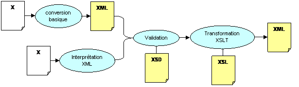
Figure 12 :
conversion XML, validation et
transformation du format de base
Note : C’est à ce niveau que nous voyons tout l’intérêt
de l’utilisation de XSLT. En effet, chaque format implique un processus de
conversion particulier, qui se résume, pour chacun, à l‘écriture d’une feuille
de règle de transformation XSLT. Nous aurions de la même manière pu mettre en
œuvre des développements spécifiques à chaque format, mais l’avantage d’XSLT est
de permettre une maintenance et une évolution simples du processus de
conversion, ce qu’un développement spécifique ne permet pas, car il oblige à
maîtriser un code à chaque fois différent.
Enfin, il est nécessaire d’effectuer le traitement inverse, c'est-à-dire de pouvoir fournir des données au format attendu par l’application ciblée. Rappelons que la technologie XSLT est capable de transformer un format XML en format texte ; mais suivant les formats, parfois complexes, celle-ci ne s’adaptera pas toujours. Par ailleurs, il ne faut pas non plus mettre en œuvre des développements spécifiques à chaque format, mais généraliser le processus pour le rendre aussi maintenable et évolutif que possible. Ainsi nous devons réutiliser le schéma précédent à l’inverse, c'est-à-dire transformer le format XML de notre application vers le format d’origine « XMLisé », pour ensuite appliquer une conversion simple vers le format d’origine.
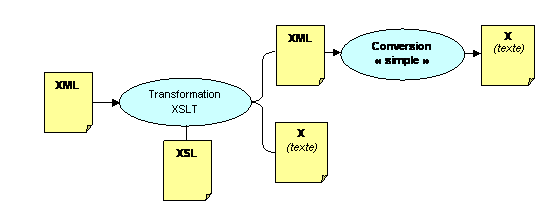
Figure 13 :
conversion inverse
8.2.3. Importation et exportation
8.2.3.1. Principe et techniques
Deux techniques seront principalement utilisées pour importer et exporter des données :
- le « mapping », technique qui consiste à représenter la structure des données. E.g. : une table de base de donnée représentée par une classe Java ou un XML-Schema
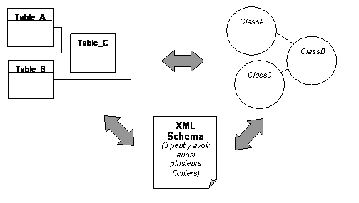
Figure 14 : « mapping » table, classe, XMLSchema
- le « data binding » (c.f. : § 5.2.1.5), technique qui consiste à affecter les données à partir d’une représentation. E.g. : affecter des données d’une table à une classe Java, ou un XML
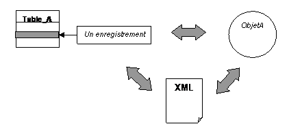
Figure 15 : « data binding » enregistrement,
objet, XML
L’importation va donc consister à affecter les données d’un document XML à une ou plusieurs tables de la base de données, et l’exportation à réaliser le processus inverse. Ce document devra correspondre à une structure définie par un XML Schema « mappant » la structure de la base de données, ou tout du moins d’un fragment de celle-ci, pour faciliter la validation et s’assurer du respect des contraintes de liaisons entre les tables.
Le « mapping » va permettre de modéliser la structure de la base de données :
- dans un document XML Schema
- par une couche d’objets Java permettant d’exploiter la base de donnée : c’est le « mapping » relationnel/objet
Le « mapping » relationnel / objet est une technique très utilisée dans les langages de programmation objets, pour gérer la persistance, faciliter les appels (requêtes) vers la base, insérer un ensemble d’appels au sein de transactions, mettre en cache certaines données souvent utilisées pour améliorer les performances …. Elle permet ainsi de ne pas utiliser directement le langage SQL (servant d’interroger une base de données) souvent laborieux et malheureusement différent suivant les bases de données. Ainsi cette technique peut aussi permettre d’être indépendant d’une base de données (e.g. : en Java, les outils de « mapping » relationnel/objet basés sur la spécification JDBC[38])
Les outils ne manquent pas dans ce domaine, notamment en Java. De plus, cette technique fait désormais l’objet d’une normalisation par l’ODMG[39]. L’objectif est de formaliser celle-ci de façon à pouvoir proposer une API d’abstraction permettant l’utilisation de différents outils du marché l’implémentant, sans avoir à modifier son code. Deux spécifications ressortent de ces travaux de normalisation :
- JDO (Java Data Object) : une spécification pour le « mapping » relationnel / objet en Java
- OQL (Object Query Language) : une spécification pour formaliser les requêtes vers la base
Ces spécifications ne sont pas encore arrivées à leur terme et font encore l’objet de discussions. Tous les outils de « mapping » relationnel / objet ne l’implémentent pas.
8.2.3.2. Fonctionnement
Bien que nous pourrions, en théorie, utiliser des outils existants pour notre projet, il s’avère que ceux-ci s’adaptent mal à des environnements mobiles, où les APIs sur lesquelles ils reposent sont restreintes ou parfois inexistante. Nous devrons donc développer notre propre outil de « mapping » relationnel / objet et de « data binding », en nous inspirant des travaux déjà effectués dans ce domaine.
Concernant le « mapping », nous nous inspirerons plus particulièrement de l’outil EOF (Enterprise Object Framework), outil développé au départ pour la plate-forme NeXT, et intégré depuis dans le serveur d’application WebObjects d’Apple.
Concernant le « data binding », qui est en fait le cœur du métier d’intégration, il nous faut aller plus loin qu’un simple outil d’affectation de données et d’export XML, comme le proposent les outils existants, dans le sens où nous devons associer un type d’action (création, mise à jour, suppression, mise en relation) lors de l’importation et aussi pouvoir limiter les données à exporter.
a. Importation
Une fois les données récupérées et prêtes à être intégrées, il faut être capable de savoir si celles-ci n’existent pas déjà dans notre base, car l’application avec laquelle nous échangeons de l’information, ne connaît pas l’état des données de notre base. Sans oublier que nous devons éviter de dupliquer de l’information.
Le processus d’importation implique donc une recherche préalable, quel que soit le type d’action. Une recherche ne peut se faire que sur la base de critère qu’il faudra préalablement définir.
Le format XML d’importation sera donc établi par le XML Schema « mappant » la base, auquel il faudra ajouter la notion de type d’action et de critères sous forme d’attributs.
Pour chaque format de données il y aura une feuille XSLT associée, permettant la transformation du format d’origine « XMLisé » vers le format XML d’importation.
Nous pouvons alors résumer le processus d’importation de la manière suivante :

Figure 16 :
processus d’importation
b. Exportation
L’exportation de données est un processus simple, puisqu’il consiste simplement à utiliser le « data binding » pour extraire un document XML, dont le format correspondra, comme pour l’importation, au schéma des tables (cette fois-ci sans les attributs qui n’ont pas d’utilité), représentant un enregistrement (ou plusieurs liés entre eux). Cependant si la base contient beaucoup de contraintes, donc beaucoup de liaisons entre les tables, il faut pouvoir limiter l’exportation. En effet soit une table A qui est lié à une table B par une relation 1-1 et à une table C par une relation 1-n, et que cette table C est aussi liée à la table B mais par une relation 1-n (Figure 17), il peut parfois être inutile d’avoir dans son exportation l’ensemble des table B liées à C.
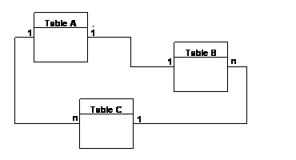
Figure 17 :
liaisons imbriquées entre tables
Une fois le document XML obtenu, il reste à le convertir au format XML (c.f. : § 8.2.2) attendu par l’application visée. Le processus d’exportation se résume donc simplement à :
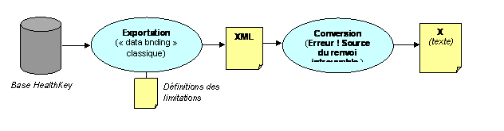
Figure 18 :
processus d’exportation
8.2.4. Synchronisation de données
8.2.4.1. Principe et techniques
La synchronisation va consister à comparer deux documents XML de même structure après récupération, transformation et validation, pour ensuite intégrer dans les applications les données modifiées de chacune.
Pour réaliser cela, nous allons utiliser l’une des techniques de synchronisation XML présentées précédemment. Auparavant nous devons définir quelles données échanger, c'est-à-dire quelles données sont communes aux deux applications et cela dès le départ ; e.g. : pour le projet HealthKey, lorsqu’il y aura synchronisation des données avec ResUrgences, les données communes sont celles qui concernent le dossier médical d’un patient. Nous avons vu au chapitre précèdent que le CEN cherche déjà à définir l’ensemble des données qui doivent constituer un dossier médical. Nous devrons donc nous inspirer de leur travail pour, à terme, pouvoir synchroniser un dossier médical avec d’autres applications qui se basent aussi sur les travaux du CEN comme format d’échange de dossier médical.
Il nous faut établir un format XML commun, représentant les données communes aux deux applications. Ce qui implique une synchronisation en mode « 3 way » (c.f. : § 5.3.2.3), c'est-à-dire qu’il faut considérer que chaque application va modifier séparément ses données.
Pour mettre en œuvre le processus de synchronisation il va donc falloir :
- écrire une feuille XSLT par format de données permettant la transformation du format d’origine « XMLisé » au format XML commun
- exporter les données de l’application HealthKey et transformer via XSLT le format XML d’export vers le format XML commun
- placer un référentiel par application synchronisée, stockant la dernière version du document XML commun nécessaire à une synchronisation en mode « 3 way »
- effectuer la synchronisation avec les trois documents XML obtenus pour obtenir la nouvelle version du document XML commun, grâce à l’une des solutions présentées plus haut (c.f. : § 5.3.1)
- écrire une feuille XSLT unique permettant la transformation du format XML commun vers le format XML d’importation de notre application
- écrire une feuille XSLT par format de données permettant la transformation du format XML commun soit directement au format d’origine, soit vers son format « XMLisé »
8.2.4.2. Fonctionnement
Le processus de synchronisation va se baser sur le modèle CVS, en considérant que pour chaque application avec laquelle nous devrons synchroniser de l’information, il y aura un document XML contenant les données communes, placé dans un référentiel, et dont la version évolue à chaque synchronisation. Le fonctionnement du processus sera tel que :
- après chaque synchronisation, une version du document XML synchronisé est stockée dans le référentiel
- à chaque nouvelle synchronisation, les applications source et destination fourniront toutes deux leur nouvelle version du document XML commun, contenant les données communes modifiées de façon indépendante de part et d’autre de chaque application
- la synchronisation en mode « 3 way » sera alors effectuée sur la base de la dernière version du document XML commun placé dans le référentiel et des deux autres documents fournis par les applications.
- Le document XML résultant de cette synchronisation, sera alors à son tour versionné, placé dans le référentiel, et envoyé aux deux applications, qui l’intégrerons alors chacune de leur coté, mettant ainsi à jour leurs bases respectives
Ce fonctionnement reste rudimentaire, le document XML qui en résulte étant une fusion, il ne précise pas l’état des données (nouvelle, modifiée, supprimée) et il est à la charge du processus d’importation de chaque application de le détecter. C’est le cas pour l’application HealthKey du moins en ce qui concerne les nouvelles données et celles modifiées, mais pas pour la suppression. Pour ce qui est des autres applications, cela reste une inconnue qui ne nous sera pas possible de résoudre de façon générique et qui impliquerait un code spécifique pour chaque cas.
Pour améliorer cela, il est impératif de pouvoir ajouter au XML résultant, sous forme d’attributs, les trois états de données déjà cités. Le choix de la solution de synchronisation XML dépendra de la capacité à pouvoir effectuer ce traitement. Ceci permettra alors de s’adapter plus aisément aux différents formats d’importation, sans cependant le généraliser complètement.
Dans notre solution, pour faciliter le développement, nous allons utiliser le format d’export de l’application HealthKey comme format XML commun.
Nous pouvons désormais résumer le processus de synchronisation de la manière suivante :

Figure 19 : processus de synchronisation
8.2.4.3. Résolution des conflits
Nous avons vu par ailleurs que la synchronisation implique des conflits lorsque l’on cherche à synchroniser dans les deux sens (« two way »). Les solutions existantes nous permettent de les détecter mais pas de les résoudre. Face à cela, il existe différentes techniques. Nous en choisirons deux :
- les règles de priorité : technique qui consiste à définir, pour chaque donnée, quelle application doit imposer son changement
- l’alerte utilisateur : technique qui consiste à stopper le déroulement du processus de synchronisation et d’informer l’utilisateur du conflit, en lui proposant de choisir lui-même quel changement s’impose par rapport à l’autre.
8.2.5. Canaux de communication
Il nous faut maintenant définir sur quels supports les échanges vont transiter. En milieu mobile et pour notre application, le modèle doit prendre en compte le fait que différents protocoles de communications peuvent être utilisés.
Nous n’implémenterons cependant que le protocole HTTP, car il est standard, simple d’utilisation, et présente l’avantage de passer les pare-feux (ce qui rappelons-le a été l’un des critères d’aboutissement des Services Web). Les protocoles comme OBEX (Infrarouge), ou d’autres, propriétaires aux supports utilisés, ne seront implémentés que dans un deuxième temps, selon la nécessité.
Bien que nous ayons rejeté la solution des Services Web (c.f. : § 6.3), il faut, là aussi, pouvoir s’assurer que les données seront correctement acheminées et, comme nous l’avons vu, cela nécessite d’utiliser un protocole asynchrone (MOM). Malheureusement, l’utilisation d’un protocole de ce type ne sera jamais une constante. Or s’assurer de l’acheminement des données ne dépend malheureusement que du protocole utilisé. Cette question ne pourra donc pas être résolue, si ce n’est qu’il faudra utiliser le modèle dans un contexte ou l’on s’est assuré par avance que les acteurs de synchronisation sont disponibles et prêt à répondre aux demandes.
8.3. La sécurité
8.3.1. Au niveau des échanges
Beaucoup de travaux ont été réalisés jusqu’ici concernant la sécurité dans le domaine de l’échange de données, et surtout depuis l’arrivée des Services Web. Nous allons nous baser sur ces travaux pour introduire la notion de sécurité au sein de notre modèle. Cette partie ne sera cependant pas mise en application, car elle est complexe et demande plus de temps pour être correctement définie et implémentée.
La sécurité consiste principalement à implémenter cinq notions fondamentales pour réaliser l’échange:
5. la non répudiation : s’assurer qu'un message est bien parti d'un émetteur spécifié pour arriver à un récepteur lui aussi spécifié. C’est surtout l'émetteur qui est ici visé, il ne peut pas « répudier » son message (i.e. dire qu'il ne l'a pas envoyé). Le principe consiste à tracer les échanges de façon à mettre en place un historique.
Dans notre application, les point 1 et 2 sont intégrés au niveau de l’application elle-même (c.f. : § 8.3.2). De plus il existe des clés USB biométriques qui, via une reconnaissance d’empreinte permettent d’authentifier le propriétaire de la clé.
Pour les points 3 et 4 il faut mettre en place des algorithmes de cryptage, ce qui nécessite que de part et d’autre, un moyen d’encrypter et de décrypter ces informations. C’est ici un élément complexe à mettre en œuvre du fait que l’existant n’est pas toujours capable de gérer cela. A terme cela deviendra indispensable et devra être mis en œuvre par tous les acteurs du projet.
Enfin pour le dernier point, la trace des échanges existe de par l’utilisation du modèle CVS pour la synchronisation. Il y a sauvegarde des entités de donnée XML en version et la possibilité de retracer tout le cheminement des modifications jusqu'à la création de la base. Dans tous les cas cependant, les authentifications et les échanges sont tracés dans un fichier de log.
8.3.2. Au niveau de l’application
Un des objectifs de l’application HealthKey est qu’on puisse la consulter rapidement, par différentes personnes, n’importe où. Il y aura donc une partie des données, visible publiquement et non modifiable, et une autre partie qui ne sera visible et modifiable que par le patient et/ou par le prestataire (médecin, hôpital, …). Ce qui implique donc une authentification et, pour chaque utilisateur, un niveau d’habilitation défini.
9. Projet : mise en oeuvre
9.1. Applet signé et serveur Web embarqué
Pour répondre aux objectifs et pouvoir utiliser une application à partir de la clé USB, il faut définir un mode de fonctionnement multi plates-formes. La question était donc de savoir comment lancer de manière générique une application à partir d’un répertoire. L’utilisation d’un exécutable étant par définition à rejeter du fait qu’il soit lié à la plate-forme. L’accès à l’Internet étant aujourd’hui géré par toutes les plates-formes, il apparaît donc possible de pouvoir utiliser le navigateur comme point d’entrée de notre application.
En effet et grâce à la technologie de l’Applet, il est possible d’exécuter une application à partir d’une page HTML. Cependant bien que l’on puisse développer des interfaces visuelles à partir des librairies graphiques de Java (AWT), nous avons préféré utiliser un serveur Web embarqué dans un premier temps, pour des raisons de compatibilité entre machines virtuelles. Nous avons constaté que suivant les plates-formes, les machines virtuelles ne sont pas toujours identiques et pas non plus à jour au niveau de leur version, ce qui entraîne de devoir imposer une ergonomie restreinte, laquelle ne serait pas adaptée pour ce type d’application destinée à un grand public d’utilisateur.
Ainsi nous avons choisi d’intégrer un serveur Web dans l’Applet et de le démarrer. L’open source Tomcat (serveur Web et moteur de JSP/Servlet) fourni par la fondation Apache, permet d’être embarqué. Il est cependant nécessaire d’accéder à des informations stockées sur la clé USB, ce que la sécurité des Applet ne permet pas dans leur fonctionnement par défaut. Pour pouvoir autoriser cela il est nécessaire de signer l’Applet ; c’est à dire de lui associer un certificat, validé par l’utilisateur au lancement.
Ainsi au démarrage de l’Applet, le serveur Web est lancé et une fenêtre s’ouvre alors sur l’application Web HealthKey.
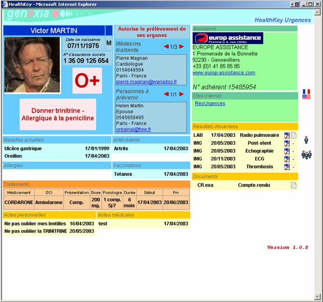
Figure 20 : fenêtre Web de l’application HealthKey
9.2. Échanges de données (exemple avec ResUrgences)
9.2.1. Conversion XML
Pour convertir un format donné en XML, nous avons défini deux techniques :
1. développer un convertisseur manuellement
2. interpréter XML avec XNI (Xerces Native Interface)
La première technique est liée à des fichiers complexes qui nécessitent une transformation particulière, chaque développement est alors spécifique et nous n’entrerons pas ici dans les détails. La seconde technique permet d’interpréter des fichiers texte aux formats classiques, typiquement les fichiers à champs séparés par un délimiteur (CSV) ou les fichiers à champs de longueur fixe.
Classes Java de
Xerces
Le principe de cette dernière technique est de parcourir le
fichier en renvoyant les évènements SAX (startElement, endElement, characters).
La librairie XNI, est en fait un ensemble de classes qui compose le modèle
objet d’interprétation XML de Xerces et qu’il suffit de sous classer pour y
insérer sa propre « manière » de lecture du fichier. Il est ainsi possible
de simuler la lecture d’un fichier quelconque comme un document XML.
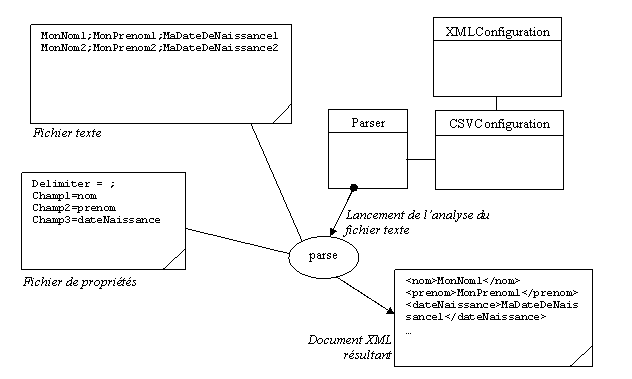
Figure 21 : exemple de conversion CSV / XML
9.2.2. Modèle d’intégration XML
9.2.2.1. Diagramme de classe
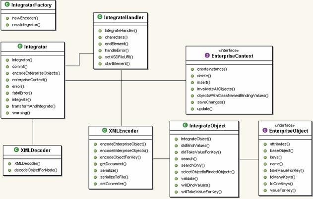
Figure 22 : diagramme UML de classe de l’intégration
IntegratorFactory : classe permettant la création de l’objet gérant l’intégration, modèle classique souvent utilisé en programmation orientée objet.
Integrator : classe principale de l’intégration, elle initialise la connexion à la base, gère les conversion et les transformation XSLT, les erreurs. Elle permet d’importer un fichier et d’exporter des données.
IntegratorHandler : implémentation de l’interface ContentHandler définit dans l’API SAX. Cette classe implémente les méthodes de « callback » : startElement(), endElement() et character(). L’objectif est ici d’extraire un par un, du fichier, les fragments d’XML correspondant à un objet en base. Chaque fois qu’un fragment est extrait du fichier, il est traité et associé à un objet en base.
XMLEncoder : transformation d’un fragment XML en un objet « mappant » un enregistrement de la base.
XMLDecoder : processus inverse où l’on extrait un document XML à partir d’un ou plusieurs objets « mappant » des enregistrements de la base.
IntegrateObject : classe gérant le processus d’intégration d’un objet à partir de son fragment XML. Trois méthodes principalement sont à retenir :
- search() : méthode effectuant une recherche en base, pour associer un objet existant et y effectuer des modifications dans le cas où la recherche aboutit. Les critères de recherche sont définis grâce à des attributs définis dans les éléments composant le fragment XML.
- willBindValues() et didBindValues: délégation permettant d’intervenir avant et après que le processus n’affecte les valeurs des éléments XML aux variables de l’objet (« data binding »). Par défaut, si la méthode search() n’a pas trouvé d’enregistrement existant, cette méthode permet de créer l’objet. Lors de processus d’intégration impliquant des besoins spécifiques, cette classe est sous classée, et l’on peut outrepasser cette méthode pour y insérer son fonctionnel.
- willTakeValueForKey(), didTakeValueForKey() : délégation avant et après chaque affectation.
- validate() : permet une validation supplémentaire, pour des besoins spécifiques et, par défaut, cette méthode renvoit une réponse affirmative.
EnterpriseContext : interface permettant de généraliser les outils de « mapping » et de faire le lien entre le modèle d’intégration et l’outil de « mapping » de la base. Chaque implémentation à pour fonction de mettre en place une connexion avec la base et de permettre l’envoi de requête.
EnterpriseObject : interface permettant de généraliser la
notion d’objet métier quel que soit l’outil de « mapping » utilisé.
9.2.2.2.
Diagramme de séquence
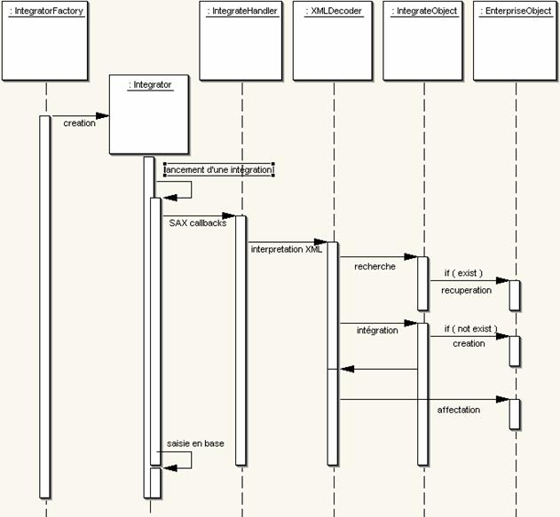
Figure 23 : diagramme UML de séquence
de l’intégration
9.2.3. Synchronisation (exemple avec ResUrgences)
Nous avons choisi d’utiliser l’outil de synchronisation développé dans le cadre de la thèse de Tancrède Lindholm de l’université d’Helsinki : 3DM. Cet outil est développé en Java et fourni en open source ; de plus, c’est celui qui se rapproche le plus de nos besoins, puisqu’il permet de fusionner deux documents XML pour obtenir un document XML et aussi de fournir un document XML en cas de conflits.
Pour l’exemple de ResUrgences, l’objectif va consister à synchroniser des données du dossier patient, communes aux deux systèmes. Seules les informations de vaccinations sont susceptibles d’être synchronisées, le reste devra faire l’objet d’un échange d’informations. En effet, l’identité du patient n’a pas à être mise à jour par ResUrgences car c’est le porteur de la clé qui est garant de sont identité ; et les informations d’examens contenues dans la clé n’ont pas à être mise à jour dans ResUrgences, car elles concernent d’anciens passages du patient aux urgences, et ne sont d’aucune utilité.
Par ailleurs, il reste les données d’antécédents contenues dans la clé, mais malheureusement celles-ci ne sont pas aux même format : dans ResUrgences elles sont saisies en texte libre alors que dans HealthKey elles font l’objet d’une liste, si bien que la aussi elle ne peuvent faire l’objet que d’un échange de HealthKey vers ResUrgences.
Le scénario de synchronisation va se dérouler en deux étapes :
1. Une recherche est effectuée pour savoir si le patient existe dans ResUrgences, en utilisant des critères d’identité. Un service de ResUrgences est disponible pour effectuer ce type de requête via le protocole HTTP et qui renvoie un message XML contenant les identités patients trouvées.
2. Si le patient existe, on effectue la synchronisation des vaccinations, on récupère les examens effectués et l’on met à jour les informations d’identité tels que adresse, téléphones, etc, si celles-ci ont changé. Si le patient n’existe pas on le crée. Dans les deux cas, le référentiel de synchronisation est initialisé et stocké sur la clé.
Dans un premier temps ce processus est automatique, et fait l’objet d’un simple assistant en deux écrans sur l’interface visuelle de HealthKey. A terme il faudra ajouter un troisième écran permettant à l’utilisateur de choisir les mises à jour qu’il veut effectuer, notamment si il veut récupérer tel ou tel examen, s’il veut mettre à jour son adresse ou pas.
10. Résultats
Concernant la partie interface visuelle, l’applet contenant le serveur Web embarqué a bien répondu à l’exigence du multi plates-formes en permettant un fonctionnement sur des Mac comme sur PC avec différents navigateurs ; mais les performances ne sont pas au rendez-vous, le serveur Web met du temps à démarrer et suivant la puissance des machines les différences sont grandes. Cela dit, la conception en couches permet facilement de s’adapter et de développer une application cliente si on le souhaite, augmentant ainsi les performances mais avec l’inconvénient de ne pas être compatible avec toutes les machines virtuelles.
Mais c’est surtout du coté des échanges et de la synchronisation que les résultats sont intéressants. En effet, l’exemple de ResUrgences avec les antécédents du patient nous le montre bien, la synchronisation de données implique que le format de celles-ci soit conciliable. Bien que nous ayons « passé la barre » de la structure, nous constatons que deux données représentant la même information mais formatées différemment ne permettent pas de synchronisation. Par ailleurs, nous constatons que le principe d’échange XML est efficace et qu’il permet de récupérer de l’information de part et d’autre, quel que soit le format. Grâce à XSLT chaque donnée ou ensemble de données peut être transformé au format attendu par l’application.
Le principe de conversion XML nous permet effectivement de nous adapter à l’existant. Ce fonctionnement a d’ailleurs été repris dans ResUrgences pour réaliser des échanges avec d’autres applications.
La problématique de fluctuation réseau
nous a amenés à nous pencher sur la synchronisation ; mais la mise en
œuvre avec la clé USB, ne nous a pas permis d’approfondir la question, et de
vraiment pouvoir évaluer l’efficacité de cette technique par rapport à une
application utilisant un mode connecté. Le projet doit cependant évoluer vers
une version sur PDA, qui impliquerait alors une vraie plate-forme de test pour
étudier plus à fond cette problématique.
11. Conclusion
Depuis un an, les réseaux mobiles de troisième génération (UMTS) ne font plus parler d’eux, le multimédia arrive sur nos téléphones mobiles, mais les applications elles-mêmes n’évoluent que très peu. En outre, les réseaux sans fils à courte portée en hertzien (Wi-Fi) sont de plus en plus courants. Le monde du mobile est en pleine gestation, et cherche à se trouver une vraie voie applicative (et donc lucrative). Par ailleurs le monde médical cherche de plus en plus à se numériser (c’est l’une des raisons de notre orientation vers ce domaine), les applications mobiles y ont leur place et ce projet en est un exemple.
La synchronisation est-elle la solution la plus efficace pour effectuer des échanges entre son terminal mobile et son système d’information ? Nous l’avons dit, tout dépend du type d’application ; mais les standards du Web, comme XML, contribuent à améliorer et faciliter les échanges et c’est sur ce point que la notion d’efficacité prend tous son sens. C’est précisément le rôle que les services Web cherchent à jouer, en combinant interopérabilité, facilité de développement et sécurité, tout en utilisant le Web.
Nous avons cherché à trouver un moyen de nous adapter à tous les types d’applications et nous avons vu que la synchronisation à ses limites, les données ne s’adaptant pas toujours, même si elles représentent la même information. La synchronisation peut alors évoluer, au sens informatique du terme, vers une technique plus générale d’échange d’informations, l’objectif étant de conserver une cohérence entre les systèmes et non plus de chercher à tout prix à retrouver les mêmes données entre les systèmes.
12. Glossaire
API : Application Programming Interface
AFNOR : Agence Française de NORmalisation
AWT : Abstract Widget Toolkit
CEN : Centre Européen de Normalisation
CDMA : Code Division Multiple Access
EDI : Electronic Data Interchange ou Echange de Données Informatisées
HTTP :
Hyper Text Transfer Protocol
HTML : Hyper
Text Markup Language
ISO :
International Standard Organisation
LAN :
Local Area Nework
PC : Personal Computer
PDA : Personal Digital Assistant
PIM : Personal Information Manager
SIH : Systèmes d’Information Hospitalier
SAU : Service d’Accès aux Urgences
TDMA : Time Division Multiple Access
WAN : World
Area Network
13. Références
[BER] E. Berk, “HtmlDiff: A Differencing Tool
for HTML Documents”, Student Project, Princeton University, http://www.htmldiff.com.
[CAM02] G. Cobéna, S. Abiteboul, A. Marian,
“Detecting Changes in XML Documents”, The 18th International Conference
on Data Engineering, San Jose, Février 2002.
[CEP99] Curbera, D. A. Epstein, “Fast
Difference and Update of XML Documents”, XTech’99, San Jose, Mars 1999, http://www.alphaworks.ibm.com/tech/xmltreediff
[CGM97] S. Chawathe, H. Garcia-Molina,
“Meaningful Change Detection in Structured Data”, Proceedings of the ACM
SIGMOD International Conference on Management of Data, June 1996.
[COB01] G.Cobéna :
http://www-rocq.inria.fr/~cobena/cdrom/www/xydiff/eng.htm
[CRGMW96] S. Chawathe, A. Rajaraman, H.
Garcia-Molina and J. Widom, “Change Detection in Hierarchically Structured
Information”, Proceedings of the ACM SIGMOD International Conference on
Management of Data, Montreal, June 1996.
[CVS] “Concurrent Versions System (CVS)”, Free
Software Foundation, http://www.gnu.org/manual/cvs-1.9.
[DBA96] F. Douglis, T. Ball, “Tracking and
Viewing Changes on the Web”, 1996 USENIX Annual Technical Conference,
1996.
[DBCK98] F. Douglis, T. Ball, Y. F. Chen, E.
Koutsofios, “The AT&T Internet Difference Engine: Tracking and Viewing
Changes on the Web”, World Wide Web, 1(1): 27-44, January 1998.
[DEL]
http://www.deltaxml.com
[GEM00] projet INRIA, anciennement nommé VERSO : http://www-rocq.inria.fr/verso/
[HAM01] Kip Hampton :
http://search.cpan.org/dist/XML-SemanticDiff/
[HIR77] D. S. Hirschberg, “Algorithm for the
Longest Common Subsequence Problem”, Journal of the ACM, 24(4): 664-675,
October 1977.
[HDO82] C. M. Hoffmann, M. J. O’Donnell,
“Pattern Matching in Trees”, Journal of the ACM, 29: 68-95, 1982.
[IBM99] http://www.alphaworks.ibm.com/tech/xmldiffmerge
[LOG] LogILab XmlDiff :
http://www.logilab.org/projects/xmldiff
[MOU02] Adrian Mouat,
http://diffxml.sourceforge.net/
[MTU98] H. Maruyama, K. Tamura and R. Uramoto,
“Digest values for DOM (DOMHash) proposal”, IBM Tokyo Research Laboratory,
http://www.trl.ibm.co.jp/projects/xml/domhash.htm, 1998.
[MYE86] - E. W. Myers, “An O(ND) Difference
Algorithm and Its Variations”, Algorithmica, 1(2): 251-266, 1986.
[SEL77] S. M. Selkow, “The Tree-to-Tree Editing
Problem”, Information Processing Letters, 6(6): 184-186, 1977.
[TAI79] K. C. Tai, “The Tree-to-Tree Correction
Problem”, Journal of the ACM, 26: 485-495, 1979.
[TLI01] T. Lindholm, “A 3-way Merging Algorithm
for Synchronizing Ordered Trees | the 3DM merging and di_erencing tool for XML”,
Thèse, Université d’Helsinki, Department of Computer Science, Laboratory of
Information Processing Science
[WAL01] Norman
Walsh, Staff
Engineer Sun Microsystems, XML Technology Center, http://wwws.sun.com/software/xml/developers/diffmk/
[WDC02] Yuan Wang, David J. DeWitt, Jin-Yi Cai,
“X-Diff: An Effective Change Detection Algorithm for XML Documents”, University
of Wisconsin – Madison, Computer Sciences Department http://www.cs.wisc.edu/~yuanwang/xdiff.html
[ZSH89] K. Zhang and D. Shasha, “Simple Fast
Algorithms for the Editing Distance between Trees and Related Problems”, SIAM
Journal of Computing, 18(6): 1245-1262, 1989.
14. Annexe : article
Résumé extrait du journal « Le Monde Informatique », n°962, décembre 2002 (version complète diffusée dans le journal « Développeur Référence », http://www.devreference.net/devrefv222.pdf)
URL : http://www.weblmi.com/articles_store/962_14/Article_view
Auteur : Sébastien Letélié
|
Des services Web asynchrones, donc plus fiables Les infrastructures de services
Web supportent deux types de mise en oeuvre : synchrone et asynchrone. Ce
dernier aspect présente des atouts en termes de fiabilité. Zoom sur le
couplage services Web et messagerie asynchrone. |
||
|
Aucune spécification liée aux
services Web n'exprime comment assurer le bon acheminement des messages.
Comment maîtriser les pannes réseau ou machine dans une architecture de
services Web ? Une des réponses est apportée par le mode asynchrone, qui, par
définition, n'implique pas d'être connecté en permanence, ni de recevoir
immédiatement une réponse. Un service Web asynchrone aura donc l'avantage
d'être plus fiable et de permettre la récupération et la centralisation
administrative des erreurs. Une
implémentation avec Axis et JMS Axis est la continuation du
projet Apache Soap, son but est d'apporter plus de souplesse à l'élaboration
de services Web avec Soap. Axis se compose de plusieurs sous-systèmes
fonctionnant ensemble. Le principe de fonctionnement d'Axis consiste en une
suite de gestionnaire d'événements appelés à la suite et dans l'ordre. Cet
ordre est défini par deux facteurs : la configuration de déploiement et le
fait que le moteur de traitement soit serveur ou client. L'objet qui transite
entre ces gestionnaires d'événements est nommé MessageContext. Cet objet
contient le message requête, le message réponse, et des propriétés sous forme
de clé/valeur. |
|
|